До цього моменту всі наші програми працювали в текстовому режимі — вводили та виводили дані через консоль. У цьому розділі ми зробимо важливий крок уперед і навчимося створювати справжні "віконні" програми з кнопками, написами, полями введення та іншими звичними елементами керування. Python надає кілька різних бібліотек для розробки графічного інтерфейсу (GUI) — серед них wxPython (вільна реалізація wxWidgets), PyQt (інтерфейс до бібліотеки Qt) та Jython (для доступу до бібліотек Java), але в цьому розділі ми детально розглянемо найпоширенішу з них — Tkinter, стандартний інструментарій Python для розробки графічного інтерфейсу користувача (ГІК), який постачається разом із самим Python і не потребує окремого встановлення.
Ми розглянемо, як створювати та налаштовувати вікна, як розміщувати в них компоненти за допомогою різних укладачів (pack, grid, place), а також детально вивчимо найважливіші "віджети" — написи (Label), кнопки (Button), поля введення (Entry), багаторядкові текстові поля (Text), рамки-контейнери (Frame), лічильники (Spinbox) та зачерку (Checkbutton) — і навчимося керувати їхнім станом за допомогою керувальних змінних. Окрім базових віджетів, ми познайомимося з меню програм, вставкою зображень за допомогою бібліотеки Pillow, діалоговими вікнами відкриття та збереження файлів, а також із сучаснішими стилізованими віджетами модуля tkinter.ttk — спадним списком Combobox та таблицею даних Treeview.
Усі приклади цього розділу перевірені у навчальному середовищі ЄPython, але з однаковим успіхом будуть працювати і в інших середовищах програмування Python — Thonny, Code with Mu, IDLE чи PyCharm.
На жаль, мова програмування Python, відома своєю простотою та універсальністю, не вміє працювати з графікою та створювати графічні інтерфейси для програм. Але не все так сумно — у багатьох випадках Python є засобом доступу до безлічі функцій, які пропонують різноманітні бібліотеки, написані на різних мовах програмування. І такою бібліотекою з набором інструментів для створення графічних інтерфейсів користувача є Tkinter.
Модуль Tkinter у Python — це стандартна бібліотека, яка використовується для створення графічного інтерфейсу користувача комп'ютерних програм. За допомогою Tkinter розробка програм з графічним інтерфейсом не буде надто складним завданням.
Перш ніж розпочати роботу з Tkinter, ви повинні мати базові знання з програмування у Python.
Бібліотека Tkinter надає нам багато вбудованих графічних компонентів інтерфейсу (їх також називають "віджетами"), які можна використовувати для створення програм для різних операційних систем.
Слово "Tkinter" є скороченням від Tk interface — інтерфейс Tk. Tk — набір інструментів, який спочатку був розроблений для мови програмування Tcl. Оскільки Tk дуже популярний, його було перенесено на декілька інших скриптових мов програмування , таких як Perl (Perl/Tk) , Ruby (Ruby/Tk) і Python (Tkinter). Tkinter реалізований як "прошарок" Python навколо Tcl/Tk.
Tkinter постачається як частина стандартної інсталяції Python, отже, вам нічого не потрібно встановлювати. Всі наведені приклади створювались та виконувались у навчальному середовищі програмування ЄPython, яке доступне за покликаннями:
Якщо ви віддаєте перевагу більш традиційним середовищам програмування, то варто скористатися Thonny або Code with Mu, втім всі наведені приклади працюватимуть і в IDLE або PyCharm.
Щоб продовжити, нам потрібно розуміти певні загальні терміни:
Об'єкт Загальний термін для будь-якої сутності (вікна, компоненти інтерфейсу, зображення, тощо), яка має певну назву, властивості та методи.
Властивості об'єктів Властивості — це спеціальні атрибути або характеристики, пов'язані з об'єктом, кожен об'єкт має власний набір властивостей.
Методи об'єктів Процедури або функції, які визначають «поведінку» об'єктів. Методи можуть приймати аргументи і можуть повертати результат.
Вікно Цей термін має різні значення в різних контекстах, але загалом він стосується прямокутної області на екрані дисплея, пов'язаної з виконанням певної програми.
Вікно верхнього рівня Вікно, яке містить інші компоненти графічного інтерфейсу. Він має стандартне оформлення та елементи керування, які відповідають стильовому оформленню вашої системи. Вікно можна переміщувати в межах "робочого столу". При створенні вікна ви можете встановити його розмір або змінити його під час виконання програми.
Компонент("віджет") Загальний термін для будь-яких об'єктів в графічному інтерфейсі користувача. Приклади компонентів: кнопки, радіокнопки, текстові поля, фрейми та текстові написи.
Фрейм Фрейм — це прямокутна область, яка може містити інші компоненти. У Tkinter компонент Frame є основною одиницею організації складних макетів.
Батько, нащадок Коли створюється будь-який компонент, створюється зв'язок «батько-нащадок» . Наприклад, якщо ви розміщуєте текстовий напис всередині фрейму, фрейм є батьківським компонентом по відношенню до напису.
Програмування графічного інтерфейсу користувача — це також і мистецтво, у якому поєднуються навички програмування, дизайну та художнього смаку, тож вам потрібне місце, де ви зможете реалізувати свої ідеї. Таким місцем у Tkinter є головне (або "кореневе" — root) вікно. Вікно програми — місце для створення графічного інтерфейсу.
Створити вікно дуже просто — для цього вам потрібно всього три рядки коду:
from tkinter import *
root = Tk()
root.mainloop()
Якщо вам ліньки набирати наведений вище текст, ви можете просто копіювати текст програми, вставивши його до редактора середовища програмування. І потім натисніть кнопку запуску програми.
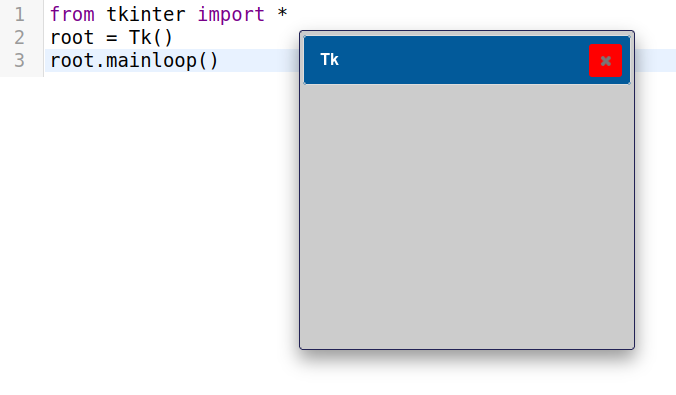
Це вікно вже має кнопку закриття, а також порожнє місце всередині, на якому можуть розміщуватися інші компоненти — написи, кнопки, тощо.Як працює цей програмний код?
*) описи об'єктів Tkinter, їх атрибути та методи для подальшої роботи.Tk() (не заморочуйтесь — це всього лише створення вікна). Головне вікно ми називатимемо «root» (кореневе) , але ви можете називати його будь-яким іншим ім'ям.mainloop (тобто цикл подій) кореневого об'єкта. Метод mainloop - це те, що утримує видимим вікно та компоненти на ньому. Використання mainloop дозволяє продовжувати роботу програми, доки ви не натиснете кнопку закриття, що завершить основний цикл.mainloop() замість того, щоб викликати root.mainloop().Ці три рядки утворюють своєрідний "скелет" будь-якої програми з графічним інтерфейсом користувача, яку ви розроблятимете за допомогою Tkinter. Весь код, який зробить вашу програму функціональною, буде розміщено між рядком 2 (створення нового об'єкта) та рядком 3 ( mainloop) цього коду.
І тепер надійшов час дізнатися, як налаштовувати вікна, використовуючи їх різні атрибути.
Кореневе вікно має заголовок, який за замовчуванням має значення tk.
from tkinter import *
root = Tk()
root.mainloop()
Щоб змінити заголовок вікна, використайте метод title():
window.title(заголовок)
Для прикладу, змінимо назву кореневого вікна на 'Це заголовок вікна':
from tkinter import *
root = Tk()
root.title('Це заголовок вікна')
root.mainloop()
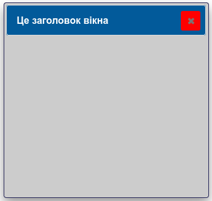
У Tkinter положення та розмір вікна на екрані визначаються його геометрією, і можуть змінюватись за допомогою методу window.geometry:
window.geometry (widthxheight±x±y)
Аргументом методу window.geometry є текстовий рядок, який обов'язково містить розміри вікна та його положення (необов'язковий аргумент).
width - ширина вікна в пікселях;height - висота вікна в пікселях;x - горизонтальне положення вікна, наприклад, значення +50 означає, що лівий край вікна має бути розташований на відстані 50 пікселів від лівого краю екрана. І навпаки, значення -50 вказує, що правий край вікна має бути на відстані 50 пікселів від правого краю екрана;y - вертикальне положення вікна, значення +50 означає, що верхній край вікна повинен бути розташований на 50 пікселів нижче верхнього краю екрана. І навпаки, значення -50 вказує, що нижній край вікна має бути на 50 пікселів вище нижнього краю екрана.У наведеному нижче прикладі встановлюється розмір вікна 600x400:
from tkinter import *
root = Tk()
root.title('Моя перша програма')
root.geometry('600x400')
root.mainloop()
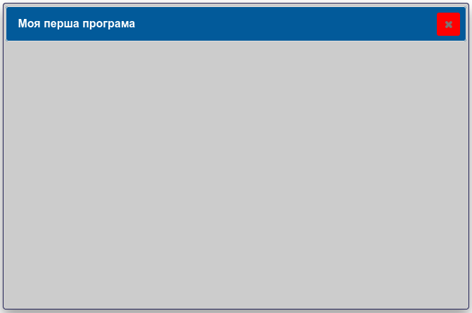
Ми можемо створювати довільну кількість вікон, які будуть потрібні у програмі. Для прикладу, створимо два вікна:
from tkinter import *
root1=Tk()
root2=Tk()
mainloop()
Якщо ми виконаємо наведений код, то побачимо лише одне вікно — інше буде перекрите цим вікном, яке розташується поверх нього. Пересвідчимось, що маємо два вікна, перетягнувши верхнє вікно за допомогою миші в будь-який бік. Щоб запобігти такому явищу, ми можемо скористатися параметрами, які встановлюють положення вікна на екрані.
from tkinter import *
root1=Tk()
root2=Tk()
root1.geometry('300x200+200+250')
root2.geometry('300x200+600+350')
root1.title('Перше вікно')
root2.title('Друге вікно')
mainloop()
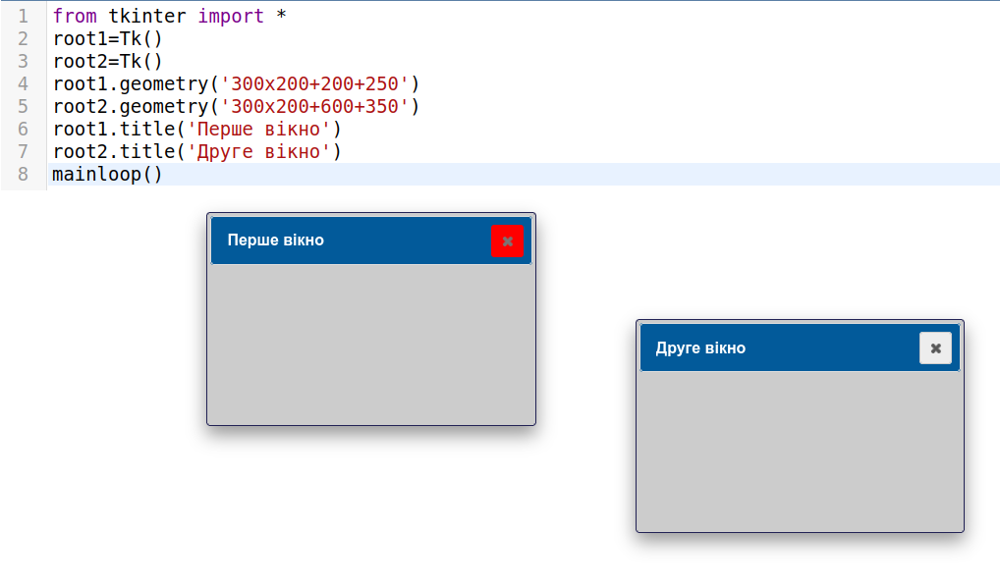
Досить часто виникає потреба запрограмувати колір компоненту графічного інтерфейсу — для прикладу, з червоним тлом можуть бути повідомлення про помилки, зеленим кольором — сповіщення про правильні дії або результат. У Tkinter колір є властивістю об'єктів, змінюючи яку ми можемо у будь-який момент змінити колір відповідного об'єкта. Атрибут background(bg) встановлює колір тла(фону) для вікна та компонентів графічного інтерфейсу, foreground (fg) — колір шрифтів написів та позначень на "віджетах".
Наразі існує два способи повідомити програму, який колір буде використано — пойменовані кольори та шістнадцяткові значення RGB.
Протягом тривалого часу для того, щоб використовувати в програмах кольори, їх потрібно було кодувати у вигляді певних числових значень, але тепер ви можете задавати колір за допомогою його назви:
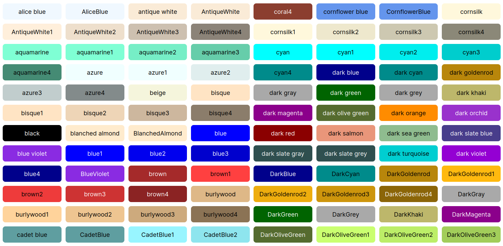
У таблиці наведено лише частину назв пойменованих кольорів , взагалі їх декілька сотень, переглянути можна за покликаннями:
Складені назви кольорів потрібно писати без пропусків — "dark green" записуємо як "darkgreen".
Колірна модель RGB призначена для захоплення, зберігання та відтворення зображень у цифрових електронних пристроях, таких як фотокамери, телевізори, сканери, відеокамери та комп'ютерні монітори.
Назва моделі походить від ініціалів трьох основних кольорів — червоного(red), зеленого(green) та синього(blue).
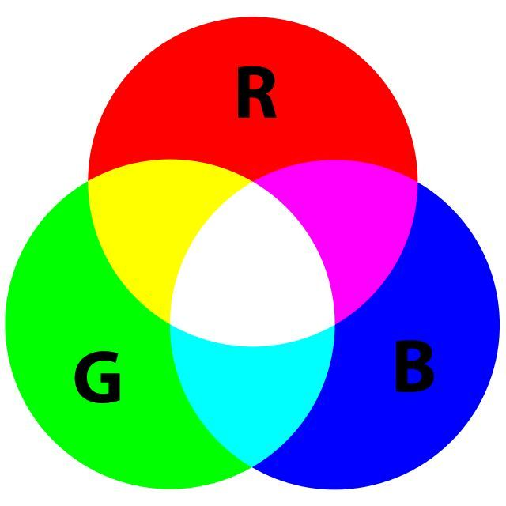
Існує кілька способів представлення кольорів RGB, які використовуються в різних ситуаціях і з різною метою, але загалом, кожен колір RGB кодується значеннями рівнів червоної, зеленої та синьої складових, кожна з яких має ("світить") певну інтенсивність, причому чим вища інтенсивність, для прикладу, зеленого світла, тим більш "зеленим" буде здаватися загальний колір.
Уявити те, як утворюються кольори за схемою RGB можна, посвітивши трьома лампами червоного, зеленого та синього кольору на білу стіну в темній кімнаті:
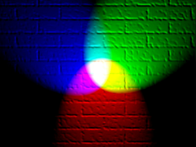
Якщо горить лише червоне світло, стіна буде червоною, якщо горить лише зелене світло, стіна виглядатиме зеленою. Якщо червона і зелена лампа горять разом, стіна виглядатиме жовтою. Поєднання червоного, зеленого та синього однакової інтенсивності створює білий колір:
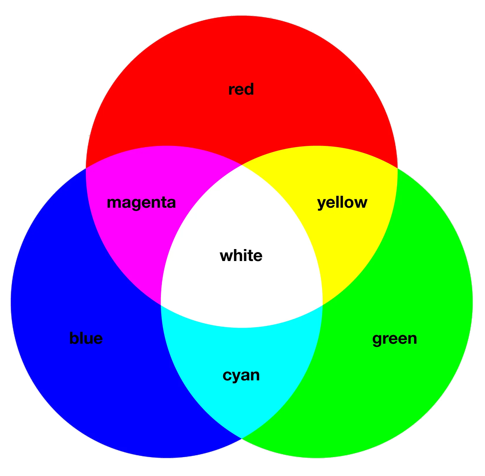
У цифрових системах складові червоного, зеленого та синього кольорів можуть мати до 256 різних інтенсивностей — від повного відсутності (рівень 0) до максимальної (рівень 255). Три складові кольору записуються разом у вигляді рядка шістнадцяткових цифр, перші дві цифри — інтенсивність червоного кольору, наступні дві — зеленого, останні дві — синього.Чому використовують шістнадцятковий код? Для запису числа 255 потрібно три символи у десятковій системі, і лише два символи (FF) — у шістнадцятковій. Максимальна кількість кольорів — 16 777 216 у десятковій системі і FFFFFF — у шістнадцятковій. У звичайній, десятковій системі числення, ми записуємо числа за основою 10, використовуючи цифри від 0 до 9. Числа з основою 16 мають цифри від 0 до F:
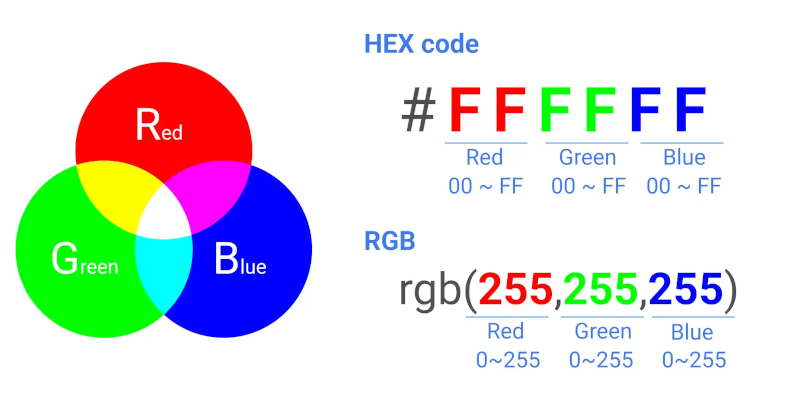
У разі використання шістнадцяткових значень коду кольору, він має записуватись, як рядок і значенням має передувати символ «#».
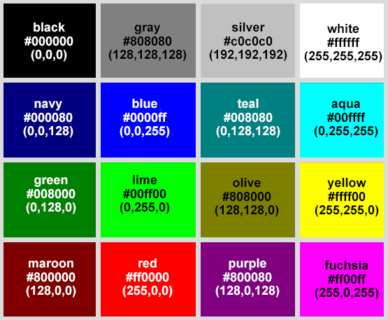
Колір тла (фону) можна змінити двома способами — за допомогою методу config або безпосередньою зміною властивості background
Метод configure(background)
from tkinter import *
root = Tk()
root.title("Налаштування кольору")
root.geometry('300x200')
root.configure(bg = 'red')
root.mainloop()
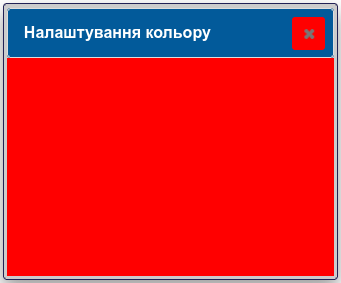
У цій програмі root.configure(bg='red') встановлює колір тла вікна як red (червоний). Ви також можете використовувати слово background замість bg:
root.configure(background='red')
Властивість (атрибут) background(bg) присутня у більшості компонентів Tkinter і може використовуватися для безпосереднього встановлення кольору тла( фону).
from tkinter import *
root = Tk()
root.title("Налаштування кольору")
root.geometry("300x200")
root["bg"] = "blue"
root.mainloop()
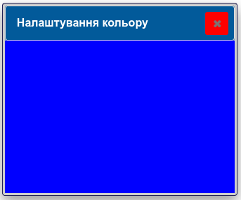
Ви можете вказати колір об'єкта за допомогою назв кольорів, таких як 'red', 'blue' або 'green' як показано вище, або ви можете вказати його через значення компонентів червоного, зеленого та синього кольорів( RGB) у вигляді шістнадцяткові кодів, таких як #49A або #a05bff.
from tkinter import *
root = Tk()
root.title("Налаштування кольору")
root.geometry("300x200")
root["bg"] = "#a05bff"
root.mainloop()
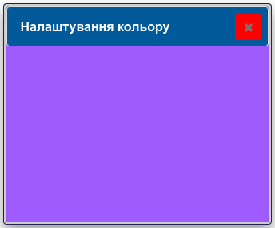
from tkinter import *
root = Tk()
root.title("Налаштування кольору")
root.geometry("300x200")
root["bg"] = "#49A"
root.mainloop()
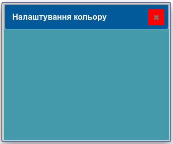
Ви можете обирати колір та спосіб його задання — використання пойменованих кольорів та шістнадцяткових кодів RGB. Загальна кількість можливих кольорів — 16 777 216, що більше, ніж може розрізнити людське око. Програмісти віддають перевагу шістнадцятковим кодам кольорів, оскільки вони є представленням рівнів червоної, зеленої та синьої складових кольору і більш передбачуваними, ніж пойменовані кольори.
Елементи керування графічного інтерфейсу — кнопки, мітки, текстові поля тощо — зазвичай називають віджетами. Перш ніж детально розглядати кожен з них окремо, корисно побачити загальну картину: які саме віджети пропонує Tkinter і для чого призначений кожен із них.
Tkinter пропонує багато типів компонентів-віджетів:
| # | Віджет / Модуль | Опис |
|---|---|---|
| 1 | Button |
Кнопка для виконання дій у додатку. |
| 2 | Canvas |
Полотно для малювання фігур (лінії, овали, багатокутники, прямокутники тощо). |
| 3 | Checkbutton |
Прапорець (зачерк), який дозволяє обирати кілька варіантів одночасно. |
| 4 | Entry |
Однорядкове текстове поле для введення даних користувачем. |
| 5 | Frame |
Контейнер (рамка) для групування та організації інших віджетів. |
| 6 | Label |
Текстовий напис (опис чи легенда) для інтерфейсу; може також містити зображення. |
| 7 | Listbox |
Список варіантів, з якого користувач може вибирати один або кілька елементів. |
| 8 | Menubutton |
Кнопка, при натисканні на яку випадає меню. |
| 9 | Menu |
Меню для вибору різних команд (використовується в Menubutton або як головне меню вікна). |
| 10 | Message |
Багаторядкове текстове поле, автоматично пристосоване для показу повідомлень. |
| 11 | Radiobutton |
Перемикач, який дозволяє вибрати лише один варіант із групи наявних. |
| 12 | Scale |
Повзунок для зручного вибору числового значення у заданому діапазоні. |
| 13 | Scrollbar |
Смуга прокрутки, яка додається до інших віджетів (наприклад, до списків чи текстових полів). |
| 14 | Text |
Потужне багаторядкове текстове поле з можливістю форматування та редагування тексту. |
| 15 | Toplevel |
Окреме додаткове (дочірнє) вікно програми зі своїми елементами. |
| 16 | Spinbox |
Модифікація поля Entry зі стрілочками для вибору значення з фіксованого списку чи діапазону. |
| 17 | PanedWindow |
Контейнер, який розділяє вікно на кілька панелей із рухомими межами. |
| 18 | LabelFrame |
Контейнерна рамка із текстовим підписом угорі, зручна для візуального об'єднання віджетів. |
| 19 | tkinter.messagebox |
Спеціальний модуль для виклику стандартних діалогових вікон (попередження, помилки, запитання). |
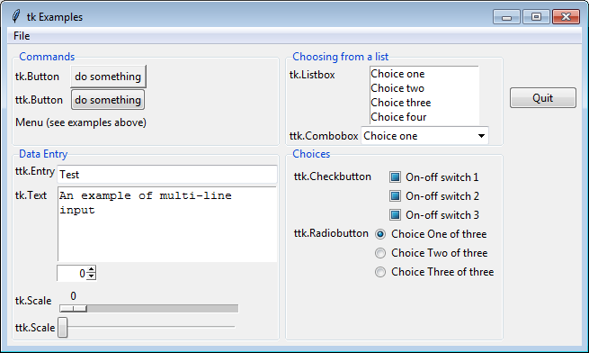
Загальний вигляд вказівки, яка використовується для додавання компоненту графічного інтерфейсу, є досить простим:
my_widget = Назва_компонента (контейнер, параметри)
Контейнер — вікно або фрейм, у якому розміщуватиметься компонент, якщо їх не вказувати, тоді за замовчуванням об'єкт розташовується в головному вікні.
Параметри — налаштування компоненту (текст напису, кольори, розмір шрифту, обробники подій тощо)
У наступному прикладі ми додамо до вікна два компоненти інтерфейсу, текстовий напису та кнопку. Зверніть увагу, що рядки з визначенням потрібних компонентів додаються до коду, який ми вже використовували для створення вікна:
from tkinter import *
root = Tk()
label = Label(root, text="Це просто текстовий напис")
button = Button(root, text="Це кнопка")
label.pack()
button.pack()
root.mainloop()
Як працює цей код:
*) класи з модуля tkinter.label як екземпляр класу компонентів Label. Перший параметр - root є контейнером для розміщення цього об'єкта. Другий параметр встановлює вміст тексту, який показуватиметься, як "Це напис".pack(), який є необхідний для розміщення напису та кнопки у вікні. Pack() - укладач компонентів, без нього напис та кнопка не будуть показані. Є декілька методів для укладання компонентів, про них ми говоритимемо пізніше.Запуск наведеного вище коду створить вікно з написом та кнопкою:
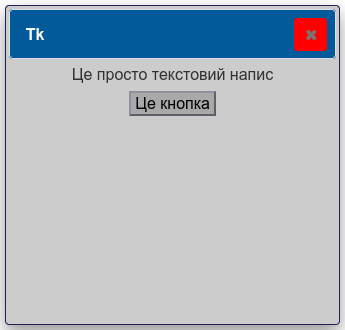
button = Button() створює новий екземпляр кнопки з класу Button..config() або **.configure(). Ці методи забезпечують однакову функціональність - метод **.config() **є просто псевдонімом методу **.configure().Клас — це категорія, яка об'єднує об'єкти зі спільними властивостями та методами, тобто всі створені кнопки будуть екземлярами класу Кнопки, всі створені написи — екземплярами класу Написи
Є два способи створювати компоненти в Tkinter.
Перший спосіб передбачає створення компонента в одному рядку, і використання методу pack() (або іншого укладача компонентів) у наступному рядку, як показано нижче:
my_label = Label(root, text = 'Це текстовий напис')
my_label.pack()
Крім того, ви можете написати обидва рядки разом таким чином:
Label(root, text = 'Це текстовий напис').pack()
Ви можете створювати пойменований об'єкт ( my_label, як у першому прикладі), або створити компонент без назви (як показано у другому прикладі).
В ідеалі вам слід мати назву об'єкта, як посилання на компонент для випадку, якщо до нього потрібно буде отримати доступ пізніше в програмі — для змін його властивостей або для виклику його внутрішніх методів. Якщо стан компонента буде залишатися незмінним після його створення, тоді вам не потрібно зберігати посилання на нього.
Якщо вам потрібне посилання на компонент, ви повинні створити його в одному рядку, а потім викликати метод укладача (для прикладу, pack()) у наступному рядку:
my_label = Label(...)
my_label.pack()
Якщо ви створили компонент з назвою, та додали виклик укладача (у нашому прикладі pack()) у тому ж самому рядку:
my_label = Label(...).pack()
Ви фактично не створюєте посилання на компонент, оскільки виклики pack()(або інших укладачів) завжди повертають None, тобто замість посилання на об'єкт інтерфейсу ви отримуєте посилання на об'єкт типу None (неіснуючий). Саме тому, коли ви пізніше намагаєтеся змінити компонент за допомогою посилання, ви отримаєте помилку, оскільки ви насправді намагаєтеся працювати з не з посиланням на компонент інтерфейсу, а з об'єктом типу None .
Але досить теорії — перейдемо до практики.
Компонент Label просто відображає текст у вікні та служить в основному для інформаційних цілей (виведення повідомлень, підпис інших елементів інтерфейсу).
За потреби напис можна створити за допомогою класу Label. Для об'єкта-напису можна вказати контейнер (вікна верхнього рівня) та необхідні параметри.
Ми можемо додати напис до вікна, створеного у попередньому прикладі, за допомогою вказівки:
label1 = Label(root, text="Вітаємо")
Параметр root вказує на об'єкт, який є "батьківським" по відношенню до створюваного об'єкта, text — це рядок, який містить текст напису. Для розміщення об'єкта на батьківському вікні скористаємось методом pack() :
label1.pack()
Отже, повний код нашої програми буде таким:
from tkinter import *
root = Tk()
root.title("Вітаємо у Tkinter")
label1 = Label(root, text="Вітаємо")
label1.pack()
root.mainloop()
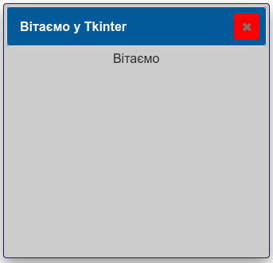
Завважте, що без виклику методу pack() напис не показуватиметься (ви можете перевірити це).
Додамо кольору для тла напису (bg — background):
from tkinter import *
root = Tk()
root.title("Вітаємо у Tkinter")
label1 = Label(root, text="Вітаємо", bg = 'lightgreen')
label1.pack()
root.mainloop()
Змінимо колір шрифту напису:
from tkinter import *
root = Tk()
root.title("Вітаємо у Tkinter")
label1 = Label(root, text="Вітаємо", bg = 'lightgreen', fg = 'red')
label1.pack()
root.mainloop()
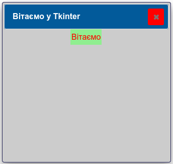
Збільшимо розмір поля для розміщення напису(width — ширина, для текстових елементів вона вказується у кількості символів):
from tkinter import *
root = Tk()
root.title("Вітаємо у Tkinter")
label1 = Label(root, text="Вітаємо", bg = 'lightgreen', fg = 'red', width=30)
label1.pack()
root.mainloop()
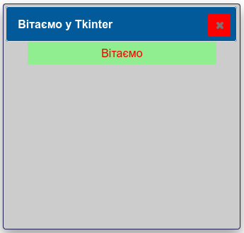
"Притиснемо" напис ліворуч(justify=LEFT)
from tkinter import *
root = Tk()
root.title("Вітаємо у Tkinter")
label1 = Label(root, text="Вітаємо", justify=LEFT, bg = 'lightgreen', fg = 'red',width=30)
label1.pack()
root.mainloop()
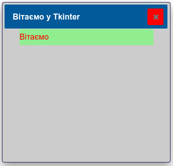
А тепер — праворуч:
from tkinter import *
root = Tk()
root.title("Вітаємо у Tkinter")
label1 = Label(root, text="Вітаємо", justify=RIGHT, bg = 'lightgreen', fg = 'red',width=30)
label1.pack()
root.mainloop()
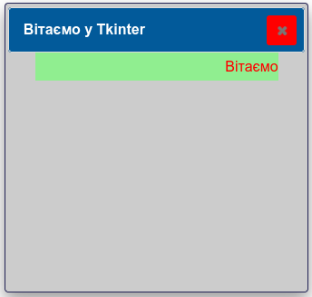
Два написи:
from tkinter import *
root = Tk()
root.title("Вітаємо у Tkinter")
label1 = Label(root, text="Вітаємо", bg = 'lightgreen', fg = 'red',width=30)
label1.pack()
label2 = Label(root, text="у світі Python", bg = 'yellow', fg = 'blue',width=30)
label2.pack()
root.mainloop()
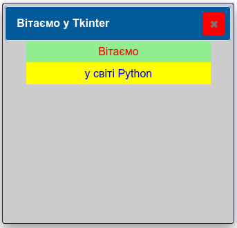
Більше кольорів:
from tkinter import *
root=Tk()
root.title("Вітаємо у Tkinter")
root.geometry("400x250")
l1=Label(root,text="Червоний",bg = "red",width=25,height=3)
l1.pack()
l2=Label(root,text="Зелений",bg="green",width=25,height=3)
l2.pack()
l3=Label(root,text="Синій",bg="blue",width=25,height=3)
l3.pack()
l4=Label(root,text="Жовтий",bg="yellow",width=25,height=3)
l4.pack()
root.mainloop()
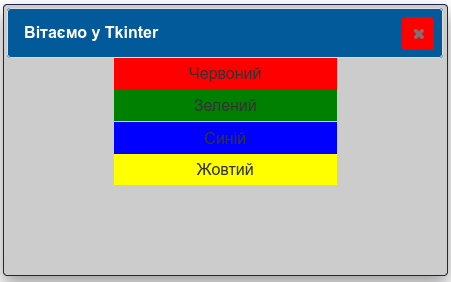
На прикладі використання об'єкта типу Label розглянемо нову властивість font -- шрифт.
from tkinter import *
root = Tk()
root. geometry('400x200')
root.title("Вітаємо у Tkinter")
label1 = Label(root, text="Вітаємо",
font = "Times 18",
bg = 'lightgreen',
fg = 'red')
label1.pack()
label2 = Label(root, text="у світі Python",
font = ( "Comic Sans MS" , 18 , "bold" ),
bg = 'yellow',
fg = 'blue')
label2.pack()
root.mainloop()
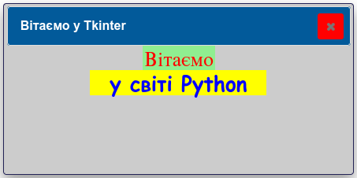
Параметри шрифту можна передати одним текстовим рядком або кортеж з декількох значень, розділених комами. Другий варіант зручний, якщо ім'я шрифту складається із двох і більше слів. Після назви шрифту можна вказати розмір та стиль.
Властивості bg, fg, width, height, font наявні у багатьох компонентів, адже кожен компонент має набір властивостей, які визначають його візуальний вигляд на екрані комп'ютера та те, як він реагує на події користувача.
Ви можете використовувати назви властивостей як ключі для доступу та зміни значень властивостей. Наприклад, щоб змінити колір тла та ширину компонента, який має назву my_label, ви можете зробити так:
my_label = Label(root, text="Це напис")
my_label['bg'] = 'red'
my_label['width'] = 16 # символів
Спробуємо задати властивості таким чином:
from tkinter import *
root = Tk()
root. geometry('400x200')
root.title("Вітаємо у Tkinter")
label1 = Label(root)
label1['text']='Вітаємо'
label1['font'] = 'Times 18'
label1['bg'] = 'lightgreen'
label1['fg'] = 'red'
label1.pack()
label2 = Label(root, text="у світі Python",
font = ( "Comic Sans MS" , 18 , "bold" ),
bg = 'yellow',
fg = 'blue')
label2.pack()
root.mainloop()
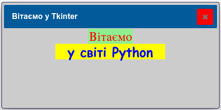
Як бачимо, запис властивостей у рядку опису компонента є більш компактним, але безпосередня зміна значень властивостей може бути використана пізніше у програмі.Дотепер ми задавали текст напису один раз, під час її створення, і він залишався незмінним. Але часто потрібно, щоб текст напису оновлювався під час роботи програми — наприклад, показував результат обчислення чи повідомлення для користувача. Для цього замість звичайного рядка в параметр text використовують спеціальну керувальну змінну Tkinter — StringVar — і передають її через параметр textvariable.
from tkinter import *
vikno = Tk()
zminna = StringVar()
mistka = Label(vikno, textvariable=zminna)
zminna.set("Привіт, Tkinter!")
mistka.pack()
vikno.mainloop()
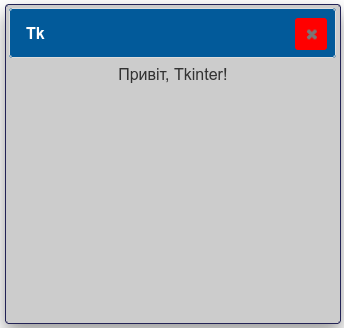
Методzminna.set(...) встановлює (або оновлює) значення, яке показує мітка. Це особливо корисно в поєднанні з кнопкою — текст мітки можна змінювати кожного разу, коли користувач натискає кнопку:
from tkinter import *
vikno = Tk()
def diia():
zminna.set("Текст змінено натисканням кнопки!")
zminna = StringVar()
mistka = Label(vikno, textvariable=zminna)
zminna.set("Початковий текст")
k = Button(vikno, text="Спробувати", command=diia)
k.pack()
mistka.pack()
vikno.mainloop()
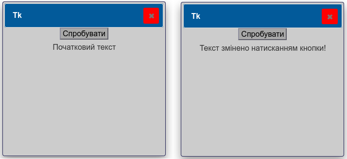
Про керувальні змінні Tkinter (
StringVar,IntVar,DoubleVar,BooleanVar) детальніше буде написано далі.
Ми вже навчилися створювати вікна та написи у них, застосовуючи різні кольори та шрифти для їх оформлення. Разом з тим, нам не вистачає суттєвого компоненту графічного інтерфейсу, який дозволяв би нам керувати виконанням програм — ми ще не створювали кнопок. Хоча, дехто, хто уважно читав попередні матеріали, може заперечити. Отже, сьогодні ми дізнаємося про те, як створювати і використовувати кнопки, а якщо бути більш точнішим — об'єкти класу Button.
Такі об'єкти є стандартним компонентом Tkinter, який використовується для створення кнопок різного призначення. Синтаксис, тобто, правило, яке використовується для додавання компонента, таке:
my_button = Button (контейнер, параметри)
І після цього потрібно викликати метод укладача компонентів (пригадуємо, що це .pack()), щоб кнопка появилась у вікні.
from tkinter import *
root = Tk()
root.geometry('300x200')
root.title('Вікно для кнопок')
my_button = Button()
my_button.pack()
root.mainloop()
Завважте на той факт, що ми не вказуємо батьківський об'єкт-"контейнер" (вікно "root") — таке можна робити, у цьому випадку Tkinter вважає, що таким об'єктом верхнього рівня є створене нами вікно, адже воно єдине.
Результат:
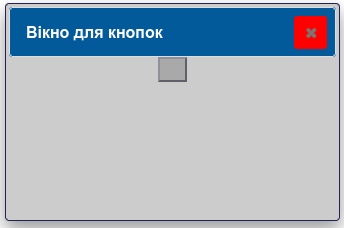
Кнопку ми створили, але, на нашу думку, у ній чогось не вистачає — звісно, що тексту. Текст ми додаємо точно таким же чином, як і у випадку створення напису — через параметр text :
from tkinter import *
root = Tk()
root.geometry('300x200')
root.title('Вікно для кнопок')
my_button = Button(text = 'Це кнопка')
my_button.pack()
root.mainloop()
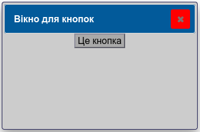
Це вже щось схоже на кнопку. Пограємось з нею, змінивши її колір на жовтий (yellow):
from tkinter import *
root = Tk()
root.geometry('300x200')
root.title('Вікно для кнопок')
my_button = Button(text = 'Це кнопка',bg = 'yellow')
my_button.pack()
root.mainloop()
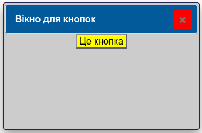
Колір шрифту — зелений (green):
from tkinter import *
root = Tk()
root.geometry('300x200')
root.title('Вікно для кнопок')
my_button = Button(text = 'Це кнопка',
bg = 'yellow',
fg = 'green' )
my_button.pack()
root.mainloop()
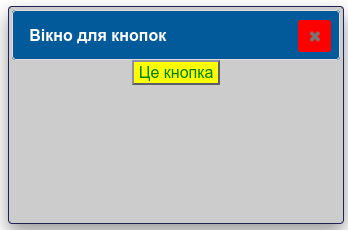
Якщо ми не вказуємо розміри (width/height) кнопки, то вони обчислюються відповідно до параметрів тексту на ній. Збільшимо ширину (width) кнопки, не забуваючи, що розмір об'єктів, що містять текст, вимірюється в символах, а не пікселях:
from tkinter import *
root = Tk()
root.geometry('300x200')
root.title('Вікно для кнопок')
my_button = Button(text = 'Це кнопка',
bg = 'yellow',
fg = 'green',
width = 20)
my_button.pack()
root.mainloop()
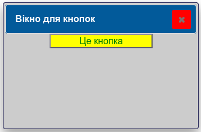
Додамо висоти(height):
from tkinter import *
root = Tk()
root.geometry('300x200')
root.title('Вікно для кнопок')
my_button = Button(text = 'Це кнопка',
bg = 'yellow',
fg = 'green',
width = 20,
height = 5)
my_button.pack()
root.mainloop()
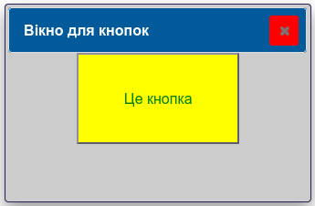
Додамо ще одну кнопку (бог лінивих та хитрих — Копіпаст, вам допоможе):
from tkinter import *
root = Tk()
root.geometry('300x250')
root.title('Вікно для кнопок')
my_button1 = Button(text = 'Жовта кнопка',
bg = 'yellow',
fg = 'green',
width = 20,
height = 5)
my_button1.pack()
my_button2 = Button(text = 'Синя кнопка',
bg = 'blue',
fg = 'green',
width = 20,
height = 5)
my_button2.pack()
root.mainloop()
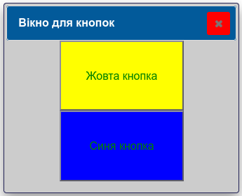
Ви ще пам'ятаєте, що текст можна подавати різними шрифтами?
from tkinter import *
root = Tk()
root.geometry('300x320')
root.title('Вікно для кнопок')
my_button1 = Button(text = 'Жовта кнопка',
bg = 'yellow',
fg = 'green',
width = 20,
height = 5,
font =('Times',10))
my_button1.pack()
my_button2 = Button(text = 'Синя кнопка',
bg = 'blue',
fg = 'green',
width = 20,
height = 5,
font =('Arial',20))
my_button2.pack()
root.mainloop()
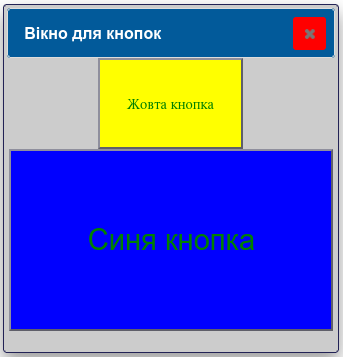
Кнопка може показувати текст лише одним шрифтом, але текст може займати більше ніж один рядок. Якщо у вас декілька кнопок, то клавішу Tab можна використовувати для переходу до наступної кнопки.
Кнопки можуть містити і зображення:
from tkinter import *
root = Tk()
root.geometry('300x320')
root.title('Вікно для кнопок')
duck_img = PhotoImage(file="duck.png")
my_button1 = Button(
text="Кря!",
bg='yellow',
fg='green',
width=200,
height=150,
font=('Times', 10),
image=duck_img,
compound="top"
)
my_button1.pack()
root.mainloop()
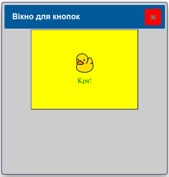
Розглянемо, як керувати текстом, розмірами та поведінкою картинок.compound)За замовчуванням, якщо ти передаси кнопці і image, і text, то зображення просто перекриє текст (або навпаки). Щоб вони товаришували, використовують параметр compound.
Він вказує, де саме відносно тексту буде розташоване зображення:
compound="top" — зображення над текстом.compound="bottom" — зображення під текстом.compound="left" — зображення ліворуч (класичний варіант для іконок).compound="right" — зображення праворуч.compound="center" — текст накладається прямо поверх зображення.compound="none" — показувати тільки зображення, якщо воно є.Це один із найбільших сюрпризів у tkinter.
width та height вимірюються в символах (наприклад, width=10 — це ширина приблизно в 10 літер).image, параметри width та height починають вимірюватися в пікселях!width=20 для кнопки з картинкою, вона стиснеться до крихітного квадратика розміром 20х20 пікселів.
Якщо розміри кнопки не вказані, вона автоматично підлаштується під повний розмір картинки.
Свого часу компанія IBM, яка тривалий час була лідером у виробництві обчислювальних пристроїв та комп'ютерів, проголосила принцип, що машина(комп'ютер) має працювати, а людина має думати, як змусити машину працювати. Всі раніше створені нами програми були "статичними", тобто жодних дій у їх вікнах не відбувалось — були написи та кнопки, які, окрім суто інформаційного, жодного іншого сенсу не мали. Тож наше завдання — змусити програму реагувати на натиск кнопки (пам'ятаємо, що "кнопки" графічного інтерфейсу — це всього лиш малюнки, а "натиск" такої кнопки — натиск кнопки комп'ютерної миші в межах її зображення)
Повертаємось до створеної раніше найпростішої кнопки:
from tkinter import *
root = Tk()
root.geometry('300x200')
root.title('Вікно для кнопок')
my_button = Button(text = 'Натисни тут')
my_button.pack()
root.mainloop()
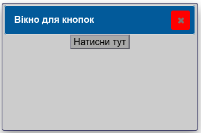
Запустили програму, спробували "натиснути" кнопку — нічого не відбулось. Так, адже для магії програмування не вистачає ще одного параметру — command:
from tkinter import *
root = Tk()
root.geometry('300x200')
root.title('Вікно для кнопок')
def click():
print('Кнопку натиснуто')
my_button = Button(text = 'Натисни тут', command = click)
my_button.pack()
root.mainloop()
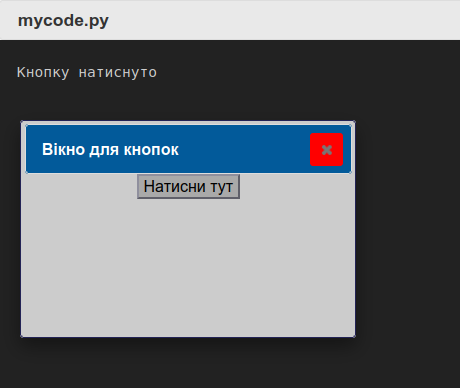
Параметр command вказує, яка функція має виконуватись, якщо кнопку натиснуто, у нашому випадку це функція click (клацок мишкою) — назвати функцію можна будь-яким іменем, наприклад this_is_a_function_that_is_executed_when_a_button_is_pressed (не варто так робити — назва функції має бути короткою та відображати певний сенс, щодо дії, яка вона виконує).
Функція — пойменований блок програмного коду
Маємо пам'ятати два правила:
Взагалі є спосіб передати аргументи до функції, яка буде викликана при натиску кнопки (використання лямбда-функції, але про це ми поговоримо згодом.
Друкувати текст у консолі, коли ми розробляємо графічний інтерфейс? Спробуємо щось інше:
from tkinter import *
root = Tk()
root.geometry('300x200')
root.title('Вікно для кнопок')
def click():
root['bg']='red'
my_button = Button(text = 'Натисни тут', command = click)
my_button.pack()
root.mainloop()
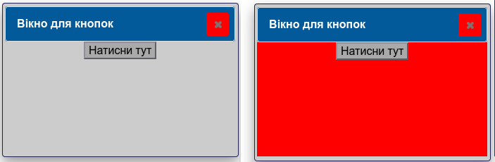
Модернізуємо програму, додавши ще дві кнопки:
from tkinter import *
root = Tk()
root.geometry('300x200')
root.title('Вікно для кнопок')
def c_red():
root['bg']='red'
def c_ylw():
root['bg']='yellow'
def c_grn():
root['bg']='green'
my_button1 = Button(text = 'Червоний', command = c_red)
my_button1.pack()
my_button2 = Button(text = 'Жовтий', command = c_ylw)
my_button2.pack()
my_button2 = Button(text = 'Зелений', command = c_grn)
my_button2.pack()
root.mainloop()
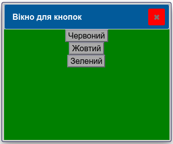
Які дії будуть виконуватись при натиску кнопки — залежить від ваших потреб і вашої фантазії.
Може бути так(клацайте по кнопці):
from tkinter import *
root = Tk()
root.geometry('300x200')
root.title('Вікно для кнопок')
wx = 13
def click():
global wx
wx = wx +1
my_button['width']= wx
my_button = Button(text = 'Натисни тут',
width = wx,
bg = 'red',
command = click)
my_button.pack()
root.mainloop()
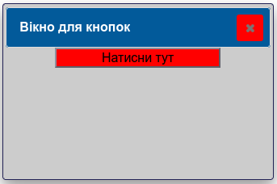
Рухаємо вікно кнопками:
from tkinter import *
root = Tk()
root.geometry('300x200+100+400')
root.title('Вікно для кнопок')
x = 100
y = 400
def c_up():
global y
y = y - 50
root.geometry('300x200+100+'+str(y))
def c_down():
global y
y = y + 50
root.geometry('300x200+100+'+str(y))
my_button1 = Button(text = 'Вгору', width=10, command = c_up)
my_button1.pack()
my_button2 = Button(text = 'Вниз', width=10, command = c_down)
my_button2.pack()
root.mainloop()
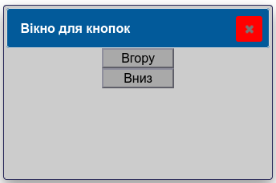
Лічильник натисків кнопки:
from tkinter import *
root = Tk()
root.geometry('300x200')
root.title('Вікно для кнопок')
counter = 0
def c_count():
global counter
counter = counter + 1
print(counter)
my_button1 = Button(text = 'Натисни', command = c_count)
my_button1.pack()
root.mainloop()
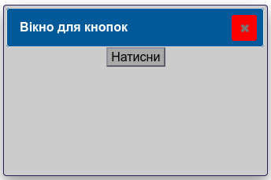
Покращимо програму, додавши напис, який повідомлятиме про кількість натисків кнопки:
from tkinter import *
root = Tk()
root.geometry('300x200')
root.title('Вікно для кнопок')
counter = 0
def c_count():
global counter
counter = counter + 1
my_label['text'] = 'Натиснуто: '+str(counter)
my_button1 = Button(text = 'Натисни',width=20, command = c_count)
my_button1.pack()
my_label = Label(text = '',width=20)
my_label.pack()
root.mainloop()
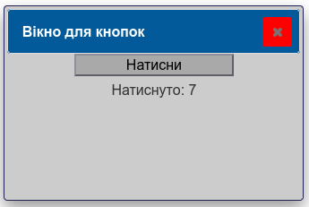
**За потреби ми можемо деактивувати кнопку, при цьому натиск на ній не викликатиме жодної реакції:
from tkinter import *
root = Tk()
root.geometry('300x200')
root.title('Вікно для кнопок')
counter = 0
def c_count():
global counter
counter = counter + 1
my_label['text'] = 'Натиснуто: '+str(counter)
my_button1 = Button(text = 'Натисни',
width=20,
command = c_count,
state = DISABLED)
my_button1.pack()
my_label = Label(text = '',width=20)
my_label.pack()
root.mainloop()
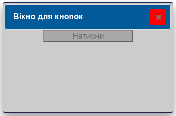
Повернутись до "звичайного" стану можна, скориставшись параметром state = NORMAL
from tkinter import *
root = Tk()
root.geometry('300x200')
root.title('Вікно для кнопок')
counter = 0
def c_count():
global counter
counter = counter + 1
my_label['text'] = 'Натиснуто: '+str(counter)
my_button1 = Button(text = 'Натисни',
width=20,
command = c_count,
state = NORMAL)
my_button1.pack()
my_label = Label(text = '',width=20)
my_label.pack()
root.mainloop()
Додамо кнопки для "вмикання" (активації) або "вимикання" (деактивації) кнопки лічильника:
from tkinter import *
root = Tk()
root.geometry('300x200')
root.title('Вікно для кнопок')
counter = 0
def c_count():
global counter
counter = counter + 1
my_label['text'] = 'Натиснуто: '+str(counter)
def c_on():
my_button['state']=NORMAL
def c_off():
my_button['state']=DISABLED
my_button = Button(text = 'Натисни',
width=20,
command = c_count)
my_button.pack()
my_label = Label(text = '',width=20)
my_label.pack()
on_button = Button(text = 'Увімкнути',
width=20,
command = c_on)
on_button.pack()
off_button = Button(text = 'Вимкнути',
width=20,
command = c_off)
off_button.pack()
root.mainloop()
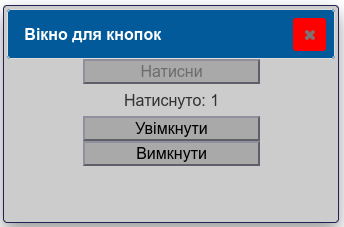
Ще один приклад — секундомір. У цій програмі ми використаємо метод .after(), який буде пов'язаний з текcтовим написом label.
Метод .after() здійснює затримку виконання програми або відкладений виклик функції. Перший параметр методу .after() — час затримки в мілісекундах, а другий параметр — ім'я функції, яку буде викликано після затримки.
У нашому прикладі виклик функції counter_label() викличе виконання функції count, в якій метод label.after(1000, count) буде циклічно щосекунди (1000 мс = 1 с) викликати функцію count:
from tkinter import *
root = Tk()
root.geometry('300x200')
root.title('Вікно для кнопок')
counter = 0
def counter_label():
def count():
global counter
counter = counter + 1
label.config(text='Відлік секунд: '+str(counter))
label.after(1000, count)
count()
label = Label(fg="darkgreen", width=25)
label.pack()
counter_label()
button = Button(text='Кінець', width=25, command=root.destroy)
button.pack()
root.mainloop()
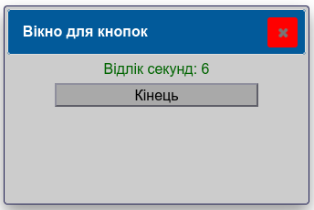
*Удосконалений секундомір:
from tkinter import *
root = Tk()
root.geometry('300x300')
root.title('Вікно для кнопок')
counter = 0
stop = True
def counter_label():
def count():
global counter,stop
if not(stop):
counter = counter + 1
label.config(text='Відлік секунд: '+str(counter))
label.after(1000, count)
count()
def cont_time():
global stop
stop = False
def stop_time():
global stop
stop = True
def new_time():
global counter,stop
counter = 0
stop = True
label = Label(fg="darkgreen", width=25,font=('Arial',20))
label.pack()
counter_label()
button1 = Button(text='Пуск', width=25, command=cont_time)
button1.pack()
button2 = Button(text='Стоп', width=25, command=stop_time)
button2.pack()
button3 = Button(text='Скинути', width=25, command=new_time)
button3.pack()
root.mainloop()
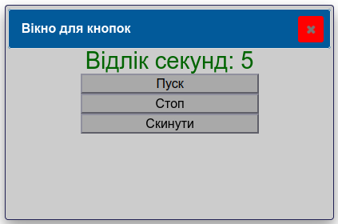
Tkinter не може безпосередньо передати аргументи функції, яка викликається при натиску кнопки, оскільки в параметрі command ми записуємо лише назву функції. Обійти це обмеження можна, використавши лямбда-функцію Python.
Змінимо вже знайому вам програму-"світлофор":
from tkinter import *
root = Tk()
root.geometry('300x200')
root.title('Вікно для кнопок')
def c_bg(c):
root['bg']= c
my_button1 = Button(text = 'Червоний', command = lambda: c_bg('red'))
my_button1.pack()
my_button2 = Button(text = 'Жовтий', command = lambda: c_bg('yellow'))
my_button2.pack()
my_button2 = Button(text = 'Зелений', command = lambda: c_bg('green'))
my_button2.pack()
root.mainloop()
Зверніть увагу, на скільки скоротився код програми при використанні лямбда-функції.
Кнопок може бути багато, але лямбда-функція допоможе нам уникнути писати окремі функції-обробника для кожної кнопки, обмежившись однією, яка отримуватиме різні аргументи в залежності від того, яку кнопку натиснуто:
from tkinter import *
root = Tk()
root.geometry('300x450')
root.title('Вікно для кнопок')
num=''
def add_char(c):
global num
if c=='C' :
num =num[0:len(num)-1]
else:
num = num + c
my_label['text']= num
my_label = Label(text = '',width=10,fg = 'red',font = ('Arial',18))
my_label.pack()
my_button1 = Button(text = '1', command = lambda: add_char('1'))
my_button1.pack()
my_button2 = Button(text = '2', command = lambda: add_char('2'))
my_button2.pack()
my_button3 = Button(text = '3', command = lambda: add_char('3'))
my_button3.pack()
my_button4 = Button(text = '4', command = lambda: add_char('4'))
my_button4.pack()
my_button5 = Button(text = '5', command = lambda: add_char('5'))
my_button5.pack()
my_button6 = Button(text = '6', command = lambda: add_char('6'))
my_button6.pack()
my_button7 = Button(text = '7', command = lambda: add_char('7'))
my_button7.pack()
my_button8 = Button(text = '8', command = lambda: add_char('8'))
my_button8.pack()
my_button9 = Button(text = '9', command = lambda: add_char('9'))
my_button9.pack()
my_button0 = Button(text = '0', command = lambda: add_char('0'))
my_button0.pack()
my_button0 = Button(text = 'C', command = lambda: add_char('C'))
my_button0.pack()
root.mainloop()
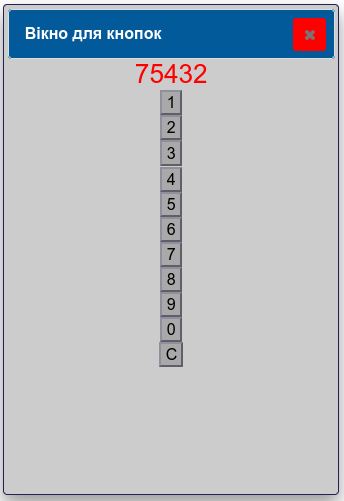
**Вам не подобається розміщення компонентів у такий довгий "стовпчик"? Додамо параметр side до методу .pack() — компоненти будуть розташовуватись у рядок, "прилипаючи" один до одного відповідною стороною:
from tkinter import *
root = Tk()
root.geometry('550x150')
root.title('Вікно для кнопок')
num=''
def add_char(c):
global num
if c=='C' :
num =num[0:len(num)-1]
else:
num = num + c
my_label['text']= num
my_label = Label(text = '',width=10,fg = 'red',font = ('Arial',18))
my_label.pack(side = RIGHT)
my_button1 = Button(text = '1', command = lambda: add_char('1'))
my_button1.pack(side = LEFT)
my_button2 = Button(text = '2', command = lambda: add_char('2'))
my_button2.pack(side = LEFT)
my_button3 = Button(text = '3', command = lambda: add_char('3'))
my_button3.pack(side = LEFT)
my_button4 = Button(text = '4', command = lambda: add_char('4'))
my_button4.pack(side = LEFT)
my_button5 = Button(text = '5', command = lambda: add_char('5'))
my_button5.pack(side = LEFT)
my_button6 = Button(text = '6', command = lambda: add_char('6'))
my_button6.pack(side = LEFT)
my_button7 = Button(text = '7', command = lambda: add_char('7'))
my_button7.pack(side = LEFT)
my_button8 = Button(text = '8', command = lambda: add_char('8'))
my_button8.pack(side = LEFT)
my_button9 = Button(text = '9', command = lambda: add_char('9'))
my_button9.pack(side = LEFT)
my_button0 = Button(text = '0', command = lambda: add_char('0'))
my_button0.pack(side = LEFT)
my_button0 = Button(text = 'C', command = lambda: add_char('C'))
my_button0.pack(side = LEFT)
root.mainloop()
Тепер візуально краще:
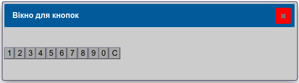
**Клас Button дозволяє створювати кнопки, як компоненти графічного інтерфейсу
| Параметр | Опис |
|---|---|
text |
Текстовий напис, який відображається на кнопці. |
bg (background) |
Колір фону кнопки. |
fg (foreground) |
Колір переднього плану (тексту або шрифту). |
font |
Шрифт та розмір тексту для кнопки. |
width |
Ширина кнопки, яка вимірюється в кількості символів. |
height |
Висота кнопки, яка вимірюється в кількості символів. |
bd (borderwidth) |
Ширина рамки навколо кнопки в пікселях. |
command |
Ім'я функції (або методу) обробника події, яка викликається при натисканні на кнопку. |
image |
Дозволяє встановити зображення на кнопці замість звичайного тексту. |
Лямбда-функція дозволяє передати аргумент функції-обробнику натиску кнопки. Метод .after() здійснює затримку виконання програми або відкладений виклик функції.
Створення компонентів графічного інтерфейсу — кнопок, написів та інших, є не надто складним завданням, але у Python, на відміну від інших середовищ розробки програм, таких, для прикладу, як Visual Studio, немає засобів візуального конструювання інтерфейсу, в якому кнопки та написи користувач розміщує у потрібному місці просто перетягуючи їх за допомогою "мишки".
Якщо ви розробляєте графічний інтерфейс для застосунку Python за допомогою Tinker, то маєте самостійно продумати розміщення компонентів у вікні програми, але не все так погано — вам можуть допомогти методи-укладачі компонентів, які за вас виконають значну частину роботи.
Укладач компонентів — це спеціальний програмний механізм, який розміщує компоненти у межах вікна.
У Tkinter (пам'ятаємо, що це бібліотека компонентів графічного інтерфейсу, що входить до Python) є три стандартні укладачі компонентів, яких ще називають "менеджерами геометрії" (англ. "geometry Manager") — методи pack, grid і place. Саме вони розміщують у вікні програми створені нами компоненти інтерфейсу, причому кожен з них робить це по-своєму.
Зверніть увагу, що в одному вікні можна використовувати тільки один тип укладання, при використанні різних методів-укладачів, програма, що використовує "стандартний" Tinker, можливо, не працюватиме або наслідки її роботи будуть непередбачуваними.
Ми вже використали укладач-пакувальник, який викликається методом pack() — якщо до комоненту інтерфейсу не застосувати будь-який з укладачів, він не відобразиться у вікні.
pack — найбільш "інтелектуальний" і досить часто найбільш непередбачуваний з наявних укладачів, при його використанні можна не задумуватись про розміщення компонентів, але за однієї умови — вони мають розміщуватись у стовпчик один над одним, або в рядок — один за одним. Для створення складної структури з використанням цього укладача зазвичай використовують рамки-Frame, вкладені у головне вікно або одна в одну.
При використанні цього укладача за допомогою параметра side можна вказати до якої сторони батьківського контейнера буде "примикати" компонент інтерфейсу. Параметр side може мати значення TOP (за замовчуванням, можна не вказувати), LEFT, BOTTOM і RIGHT.
При використанні укладача pack() компоненти потрібно групувати відповідно до використаного параметра side, у випадку якщо для укладання компонентів, що знаходяться на одному вікні або в одному фреймы, вказано впереміш різні сторони, то при цьому можна не досягти бажаного результату, оскільки можуть з'являтися зсуви компонентів з потрібного положення.
Параметри pack:
· side (LEFT / RIGHT / TOP / BOTTOM) — сторона, до якої сторони має примикати компонент;
Приклади.
У першому прикладі значення параметру side не вказано, отже буде використано розміщення згори-донизу від верхнього краю вікна (TOP). Для демонстрації обрано кнопки (Button), але з таким же успіхом можна використовувати написи (Label):
from tkinter import *
root = Tk()
root.geometry('350x280')
Button(text='1',width=11,height=2,bg="red" ).pack()
Button(text='2',width=11,height=2,bg="green" ).pack()
Button(text='3',width=11,height=2,bg="blue" ).pack()
Button(text='4',width=11,height=2,bg="yellow").pack()
root.mainloop()
Аналогічний результат ми отримаємо, вказавши параметр side = TOP:
from tkinter import *
root = Tk()
root.geometry('350x280')
Button(text='1',width=11,height=2,bg="red" ).pack(side=TOP)
Button(text='2',width=11,height=2,bg="green" ).pack(side=TOP)
Button(text='3',width=11,height=2,bg="blue" ).pack(side=TOP)
Button(text='4',width=11,height=2,bg="yellow").pack(side=TOP)
root.mainloop()
При застосуванні параметру side=LEFT, компоненти розміщуються в один рядок, починаючи від лівого краю вікна:
from tkinter import *
root = Tk()
root.geometry('350x200')
Button(text='1',width=11,height=2,bg="red" ).pack(side=LEFT)
Button(text='2',width=11,height=2,bg="green" ).pack(side=LEFT)
Button(text='3',width=11,height=2,bg="blue" ).pack(side=LEFT)
Button(text='4',width=11,height=2,bg="yellow").pack(side=LEFT)
root.mainloop()
Тепер side=RIGHT — починаємо від правого краю:
from tkinter import *
root = Tk()
root.geometry('350x200')
Button(text='1',width=11,height=2,bg="red" ).pack(side=RIGHT)
Button(text='2',width=11,height=2,bg="green" ).pack(side=RIGHT)
Button(text='3',width=11,height=2,bg="blue" ).pack(side=RIGHT)
Button(text='4',width=11,height=2,bg="yellow").pack(side=RIGHT)
root.mainloop()
Знизу:
from tkinter import *
root = Tk()
root.geometry('350x250')
Button(text='1',width=11,height=2,bg="red" ).pack(side=BOTTOM)
Button(text='2',width=11,height=2,bg="green" ).pack(side=BOTTOM)
Button(text='3',width=11,height=2,bg="blue" ).pack(side=BOTTOM)
Button(text='4',width=11,height=2,bg="yellow").pack(side=BOTTOM)
root.mainloop()
І з усіх чотирьох сторін:
from tkinter import *
root = Tk()
root.geometry('350x250')
Button(text='1',width=11,height=2,bg="red" ).pack(side=TOP)
Button(text='2',width=11,height=2,bg="green" ).pack(side=LEFT)
Button(text='3',width=11,height=2,bg="blue" ).pack(side=RIGHT)
Button(text='4',width=11,height=2,bg="yellow").pack(side=BOTTOM)
root.mainloop()
За допомогою рамок(Frame) можна створювати складніші конструкції:
from tkinter import *
root = Tk()
root.geometry('300x280')
# expand=True дозволяє фреймам ділити доступну висоту вікна навпіл,
# fill=BOTH змушує їх розтягуватися по горизонталі та вертикалі.
f1 = Frame(root)
f1.pack(expand=True, fill=BOTH)
f2 = Frame(root)
f2.pack(expand=True, fill=BOTH)
# Для кнопок всередині фреймів теж додаємо expand=True та fill=BOTH,
# щоб вони порівну ділили ширину фрейму і заповнювали його.
Button(f1, text='1', bg="red").pack(side=LEFT, expand=True, fill=BOTH)
Button(f1, text='2', bg="green").pack(side=LEFT, expand=True, fill=BOTH)
Button(f2, text='3', bg="blue").pack(side=LEFT, expand=True, fill=BOTH)
Button(f2, text='4', bg="yellow").pack(side=LEFT, expand=True, fill=BOTH)
root.mainloop()
Про компонент Frame та його використання ми поговоримо пізніше.
Зверніть увагу, що для рамок-Frame метод pack() ми викликали в окремому рядку — це потрібно для того, щоб можна було використати назву рамки-фрейма в якості контейнера для розміщення кнопок надалі.
Grid є одним із найбільш популярних серед програмістів укладачів компонентів інтерфейсу у Tkinter, оскільки він дозволяє без надмірних зусиль конструювати досить складні інтерфейси. "Grid" з англійської мови перекладається як "сітка", проте за змістом правильніше говорити про таблицю, адже цей укладач розташовує компоненти у комірках прямокутної таблиці — при розміщенні компонентів батьківський контейнер (зазвичай це вікно або фрейм) умовно поділяється на комірки подібно до таблиці. Адреса кожної комірки складається з номера стовпця(column) та номера(row). Нумерація починається з нуля, жодних попередніх дій із розбиття батьківського контейнера на комірки робити не потрібно — Tkinter це робить самостійно, виходячи із зазначених користувачем позицій компонентів.
Табличний спосіб розміщення кращий для розробки складних інтерфейсів через його гнучкість та зручність, оскільки grid дозволяє уникнути використання безлічі фреймів, що неминуче у разі використання укладача pack.
Параметри grid:
Комірки можна об'єднувати як по горизонталі ( columnspan ), так і по вертикалі ( rowspan ). У випадку об'єднання адресою об'єднаної комірки є адреса верхньої лівої комірки у блоці об'єднаних комірок.
Щоб об'єднати комірки по горизонталі, використовується параметр columnspan, в якому вказується кількість об'єднаних комірок.
Параметр rowspan подібним чином об'єднує комірки по вертикалі. За потреби можна поєднувати параметри columnspan та rowspan.
Розміщення "квадратом" (зверніть увагу, на скільки менший обсяг коду порівняно з використанням методу pack() у попередньому прикладі):
from tkinter import *
root = Tk()
root.geometry('300x280')
Button(text='1',width=11,height=2,bg="red" ).grid(column=0, row=0)
Button(text='2',width=11,height=2,bg="green" ).grid(column=1, row=0)
Button(text='3',width=11,height=2,bg="blue" ).grid(column=0, row=1)
Button(text='4',width=11,height=2,bg="yellow").grid(column=1, row=1)
root.mainloop()
Сітка 3 х 3 :
from tkinter import *
root = Tk()
root.geometry('300x250')
Button(text='1',width=11,height=2,bg="red" ).grid(column=0, row=0)
Button(text='2',width=11,height=2,bg="green" ).grid(column=1, row=0)
Button(text='3',width=11,height=2,bg="blue" ).grid(column=2, row=0)
Button(text='4',width=11,height=2,bg="yellow").grid(column=0, row=1)
Button(text='5',width=11,height=2,bg="pink" ).grid(column=1, row=1)
Button(text='6',width=11,height=2,bg="brown" ).grid(column=2, row=1)
Button(text='7',width=11,height=2,bg="gray" ).grid(column=0, row=2)
Button(text='8',width=11,height=2,bg="orange").grid(column=1, row=2)
Button(text='9',width=11,height=2,bg="violet").grid(column=2, row=2)
root.mainloop()
Вгорі та у нижньому правому кутку:
from tkinter import *
root = Tk()
root.geometry('300x250')
Button(text='1',width=11,height=2,bg="red" ).grid(column=0, row=0)
Button(text='2',width=11,height=2,bg="green" ).grid(column=1, row=0)
Button(text='3',width=11,height=2,bg="blue" ).grid(column=2, row=0)
Label(text='7',width=11,height=6 ).grid(column=0, row=1, rowspan=11)
Button(text='8',width=11,height=2,bg="orange").grid(column=1, row=12)
Button(text='9',width=11,height=2,bg="violet").grid(column=2, row=12)
root.mainloop()
Напис "7" заповнює порожнє місце — якщо цього не зробити, тоді укладач проігнорує порожні рядки.
У верхньому правому кутку:
from tkinter import *
root = Tk()
root.geometry('250x300')
Label(text='1',width=16,height=6).grid(column=0, row=0,columnspan =2, rowspan=2)
Button(text='2',width=11,height=2,bg="green" ).grid(column=2, row=0)
Button(text='3',width=11,height=2,bg="blue" ).grid(column=2, row=1)
root.mainloop()
І більш складніше компонування:
from tkinter import *
root = Tk()
root.geometry('400x300')
Label(text='0.',width=21,font=('Arial',24),bg='olive',justify=RIGHT).grid(column=0,row=0,columnspan=4)
Button(text='C',width=11,height=2).grid(column=0,row=1)
Button(text='7',width=11,height=2).grid(column=0,row=2)
Button(text='8',width=11,height=2).grid(column=1,row=2)
Button(text='9',width=11,height=2).grid(column=2,row=2)
Button(text='*',width=11,height=2).grid(column=3,row=2)
Button(text='4',width=11,height=2).grid(column=0,row=3)
Button(text='5',width=11,height=2).grid(column=1,row=3)
Button(text='6',width=11,height=2).grid(column=2,row=3)
Button(text='/',width=11,height=2).grid(column=3,row=3)
Button(text='1',width=11,height=2).grid(column=0,row=4)
Button(text='2',width=11,height=2).grid(column=1,row=4)
Button(text='3',width=11,height=2).grid(column=2,row=4)
Button(text='-',width=11,height=2).grid(column=3,row=4)
Button(text='0',width=11,height=2).grid(column=0,row=5)
Button(text='.',width=11,height=2).grid(column=1,row=5)
Button(text='=',width=11,height=2).grid(column=2,row=5)
Button(text='+',width=11,height=2).grid(column=3,row=5)
root.mainloop()
Укладач place() є простим у використанні, і він дозволяє розміщувати компонент у фіксованому місці. При використанні цього укладача необхідно попередньо визначити координати кожного компоненту і записати їх у параметрах укладача.
Координати вказуються в абсолютних значеннях, тобто у пікселях.
Суттєвим недоліком place() є те, що якщо запустити код в іншому середовищу або іншій операційній системі, яка використовує інші розміри та стилі шрифтів, текстові написи можуть виходити за межі компонентів або виходити за межі вікон. Тому place() використовується не так часто, як grid(). Крім цього, він має два основних недоліки:
Параметри place
Спробуємо розмістити кнопку на початку відліку координат:
from tkinter import *
root = Tk()
root.geometry('350x300')
Button(text='1',width=11,height=2,bg="red" ).place(x=0, y=0)
root.mainloop()
У нижньому правому кутку вікна:
from tkinter import *
root = Tk()
root.geometry('350x300')
Button(text='1',width=11,height=2,bg="red" ).place(x=260, y=210)
root.mainloop()
У центрі вікна:
from tkinter import *
root = Tk()
root.geometry('350x300')
Button(text='1',width=11,height=2,bg="red" ).place(x=135, y=100)
root.mainloop()
"Асорті":
from tkinter import *
root = Tk()
root.geometry('400x350')
Button(text='1',width=11,height=2,bg="red" ).place(x=0, y=0)
Button(text='2',width=11,height=2,bg="green" ).place(x=270, y=0)
Button(text='3',width=11,height=2,bg="blue" ).place(x=0, y=210)
Button(text='4',width=11,height=2,bg="yellow").place(x=270, y=210)
Button(text='5',width=11,height=2,bg="pink" ).place(x=135, y=100)
Button(text='6',width=11,height=2,bg="brown" ).place(x=75, y=150)
Button(text='7',width=11,height=2,bg="lime" ).place(x=195, y=150)
Button(text='8',width=11,height=2,bg="orange").place(x=135, y=180)
Button(text='9',width=11,height=2,bg="violet").place(x=135, y=210)
root.mainloop()
**
Дві кнопки і напис між ними:
from tkinter import *
root = Tk()
root.geometry('350x300')
Button(text='1',width=11,height=2,bg="red" ).place(x=40, y=50)
Button(text='2',width=11,height=2,bg="green" ).place(x=220, y=50)
Label(text = 'text label',font = ("Arial",14)).place(x=120, y=50)
root.mainloop()
Змінили шрифт — і все зіпсувалось:
Хоча укладач place() може бути поганим вибором для створення адаптивних вікон, але це не означає, що ви не повинні його використовувати. У деяких випадках він може бути єдиним засобом отримати те, що вам потрібно, наприклад, якщо вимагається точне розміщення компонентів на визначеній відстані один від одного або їх накладання.
Вікна мають зберігати свій вигляд незалежно від того, на якій платформі вони переглядаються; Найкращим вибором для створення складних макетів є укладач grid() — створені за його допомогою вікна є адаптивними; Укладач pack() доцільно застосовувати для випадків, коли розташування компонентів не має суттєвої ролі або коли компоненти розташовуються в один стовпчик або рядок; При використанні pack() розташування компонентів залежить від порядку виклику; Використовувати укладач place() варто при фіксованому розмірі вікна і параметрах шрифтів.
Введення даних у Tkinter можна здійснювати у різний спосіб:
Компонент Entry використовується для отримання одного текстового рядка, введеного користувачем (такий собі аналог консольної вказівки "input"). За допомогою Entry можна не тільки вводити, але і відображати один рядок тексту, який можна буде змінити.
Ви можете виділяти, копіювати та вставляти дані в рядок, користуючись системним буфером обміну. Місце вставки виділено курсором. Поле введення може бути активним (виділено, з миготливим курсором) або неактивне — щоб його активізувати потрібно перейти до нього, клацнувши у ньому вказівником миші, за допомогою клавіші "Tab" або скориставшись методом .focus() .
Компонент дозволяє програмно вставляти дані до рядка (.insert())
Позиції в тексті подаються як індекси, які, як і звичайні індекси Python, починаючи з 0.
Константа END відноситься до позиції після кінця тексту.
Щоб створити новий компонент Entry у кореневому вікні чи фреймі, потрібно скористатися такою вказівкою:
widget_name = Entry(master, options)
де master — посилання на батьківський контейнер, тобто вікно або фрейм, якщо контейнером є головне вікно, то цей параметр можна не вказувати, а options — набір параметрів:
Розпочнемо з найпростіших прикладів — просто поле для введення:
from tkinter import *
root = Tk()
entry = Entry()
entry.pack()
root.mainloop()
Результат виконання програми:
Зверніть увагу, що метод pack(), який розміщує компонент у вікні, викликається у окремому рядку — це потрібно для того, щоб надалі можна було використовувати посилання на створений об'єкт при отриманні значення від нього або для програмної модифікації вмісту поля введення.
Ускладнюємо програму, додавши напис-підказку, яка пояснює, що робити:
from tkinter import *
root = Tk()
label = Label(text = 'Введіть пароль: ')
label.pack(side=LEFT)
entry = Entry()
entry.pack(side=LEFT)
root.mainloop()
Поле введення є активним, в нього можна вводити будь-який текст, але як отримати введені дані для їх подальшого опрацювання?
Для цього нам потрібно компонент, який фіксуватиме момент закінчення введення та викликатиме функцію для подальшого опрацювання даних. У нашій програмі таким компонентом буде кнопка з написом "Перевірити", яка викликатиме функцію check(), яка видобуватиме введенне значення з поля введення. Отримати введене значення можна, використавши метод .get():
from tkinter import *
root = Tk()
root.geometry('400x200')
def check():
print(entry.get())
label = Label(text = 'Введіть пароль: ')
label.pack(side=LEFT)
entry = Entry(width=15)
entry.pack(side=LEFT)
button = Button(text = 'Перевірити',command = check)
button.pack(side = LEFT)
root.mainloop()
Для більш складніших програмних конструкцій будемо використовувати укладач grid() — він дозволяє зручним способом керувати розміщенням компонентів у вікні за допомогою сітки. Пам'ятаємо, що початком відліку є верхня ліва комірка — 0,0 , стовпець — column, рядок — row:
from tkinter import *
root = Tk()
root.geometry('300x200')
def check():
print(entry.get())
label = Label(text = 'Введіть пароль: ')
label.grid(column=0, row = 0)
entry = Entry(width=15)
entry.grid(column=1, row = 0)
button = Button(text = 'Перевірити',padx=20,command = check)
button.grid(column=1, row = 1)
root.mainloop()
Змінимо програму, додавши поле для введення імені користувача:
from tkinter import *
root = Tk()
root.geometry('300x200')
def check():
print(entry1.get(), entry2.get())
label1 = Label(text = "Введіть ім'я: ")
label1.grid(column=0, row = 0)
entry1 = Entry(width=15)
entry1.grid(column=1, row = 0)
label2 = Label(text = 'Введіть пароль: ')
label2.grid(column=0, row = 1)
entry2 = Entry(width=15)
entry2.grid(column=1, row = 1)
button = Button(text = 'Перевірити',padx=20,command = check)
button.grid(column=1, row = 2)
root.mainloop()
Програма має перевіряти введені облікові дані (ім'я та пароль), тож змінимо функцію check(), вважаючи, що правильними даними є ім'я "nemo" та пароль "123". Якщо дані введено правильно, отримуємо повідомлення "Доступ дозволено", в іншому випадку — "Доступ заборонено":
from tkinter import *
root = Tk()
root.geometry('300x200')
def check():
name = entry1.get()
password = entry2.get()
if (name == 'nemo') and (password == '123'):
print('Доступ дозволено')
else:
print('Доступ заборонено')
label1 = Label(text = "Введіть ім'я: ")
label1.grid(column=0, row = 0)
entry1 = Entry(width=15)
entry1.grid(column=1, row = 0)
label2 = Label(text = 'Введіть пароль: ')
label2.grid(column=0, row = 1)
entry2 = Entry(width=15)
entry2.grid(column=1, row = 1)
button = Button(text = 'Перевірити',padx=20,command = check)
button.grid(column=1, row = 2)
root.mainloop()
Результат роботи ми спостерігаємо в консолі, але це ж текстовий інтерфейс! Спробуємо вивести результат в інформаційному вікні за допомогою методу .showinfo() компонента messagebox :
from tkinter import *
from tkinter import messagebox
root = Tk()
root.geometry('300x200+200+200')
def check():
name = entry1.get()
password = entry2.get()
if (name == 'nemo') and (password == '123'):
messagebox.showinfo('Повідомлення','Доступ дозволено')
else:
messagebox.showerror('Повідомлення','Доступ заборонено')
label1 = Label(text = "Введіть ім'я: ")
label1.grid(column=0, row = 0)
entry1 = Entry(width=15)
entry1.grid(column=1, row = 0)
label2 = Label(text = 'Введіть пароль: ')
label2.grid(column=0, row = 1)
entry2 = Entry(width=15)
entry2.grid(column=1, row = 1)
button = Button(text = 'Перевірити',padx=20,command = check)
button.grid(column=1, row = 2)
root.mainloop()
Результат:
Компонент Entry має декілька методів, які дозволяють працювати з вмістом поля введення. Основні з них:
Спробуємо використовувати ці методи у програмах.
Вставимо рядок в кінець введеного в поле введення, тексту за допомогою .insert(END, text):
from tkinter import *
root = Tk()
root.geometry('300x200')
def ins():
text = entry2.get()
entry1.insert(END,text)
label1 = Label(text = "Головне поле: ")
label1.grid(column=0, row = 0)
entry1 = Entry(width=15)
entry1.grid(column=1, row = 0)
label2 = Label(text = 'Рядок для вставки: ')
label2.grid(column=0, row = 1)
entry2 = Entry(width=15)
entry2.grid(column=1, row = 1)
button = Button(text = 'Вставити',padx=20,command = ins)
button.grid(column=1, row = 2)
root.mainloop()
Введений в нижнє поле рядок додається в кінець рядка, введеного у верхнє поле:
Для додавання на початок потрібно модифікувати функцію ins() у попередній програмі:
def ins():
text = entry2.get()
entry1.insert(0,text)
Тепер в середині рядка ( індекс = 3, отже це четверта позиція, оскільки рахуємо з 0):
def ins():
text = entry2.get()
entry1.insert(3,text)
Спробуємо очистити рядки:
from tkinter import *
root = Tk()
root.geometry('300x200')
def clear():
entry1.delete(0,END)
entry2.delete(0,END)
label1 = Label(text = "Ім'я: ")
label1.grid(column=0, row = 0)
entry1 = Entry(width=15)
entry1.grid(column=1, row = 0)
label2 = Label(text = 'Пароль: ')
label2.grid(column=0, row = 1)
entry2 = Entry(width=15)
entry2.grid(column=1, row = 1)
button = Button(text = 'Очистити',padx=20,command = clear)
button.grid(column=1, row = 2)
root.mainloop()
Після натиску кнопки:
Видаляємо символи у вказаній позиції:
from tkinter import *
root = Tk()
root.geometry('300x200')
def clear():
entry1.delete(2,3)
entry2.delete(2,3)
label1 = Label(text = "Ім'я: ")
label1.grid(column=0, row = 0)
entry1 = Entry(width=15)
entry1.grid(column=1, row = 0)
label2 = Label(text = 'Пароль: ')
label2.grid(column=0, row = 1)
entry2 = Entry(width=15)
entry2.grid(column=1, row = 1)
button = Button(text = 'Очистити',padx=20,command = clear)
button.grid(column=1, row = 2)
root.mainloop()
У програмі перевірки введеного імені та пароля, яку ми створили раніше, не було можливості очищення полів введення за допомогою кнопки, тож додамо це:
from tkinter import *
from tkinter import messagebox
root = Tk()
root.geometry('300x200+200+200')
def check():
name = entry1.get()
password = entry2.get()
if (name == 'nemo') and (password == '123'):
messagebox.showinfo('Повідомлення','Доступ дозволено')
else:
messagebox.showerror('Повідомлення','Доступ заборонено')
def clear():
entry1.delete(0,END)
entry2.delete(0,END)
label1 = Label(text = "Ім'я: ")
label1.grid(column=0, row = 0)
entry1 = Entry(width=15)
entry1.grid(column=1, row = 0)
label2 = Label(text = 'Пароль: ')
label2.grid(column=0, row = 1)
entry2 = Entry(width=15)
entry2.grid(column=1, row = 1)
button1 = Button(text = 'Перевірити',width=12,command = check)
button1.grid(column=1, row = 2)
button2 = Button(text = 'Очистити',width=12,command = clear)
button2.grid(column=1, row = 3)
root.mainloop()
З думкою про майбутнє, створимо просту програму-обчислювач, яка додаватиме два числа, введені в поля Entry:
from tkinter import *
root = Tk()
root.geometry('300x250')
def add():
a = int(entry1.get())
b = int(entry2.get())
entry3.insert(0,a+b)
def clear():
entry1.delete(0,END)
entry2.delete(0,END)
entry3.delete(0,END)
label1 = Label(text = 'І число: ')
label1.grid(column = 0,row =0)
label2 = Label(text = 'ІІ число: ')
label2.grid(column = 0,row =1)
entry1 = Entry(width=12,justify=RIGHT)
entry1.grid(column = 1,row =0)
entry2 = Entry(width=12,justify=RIGHT)
entry2.grid(column = 1,row =1)
button1 = Button(text = 'Додати', width=12,command = add)
button1.grid(column = 1,row =2)
label3 = Label(text = 'Результат: ')
label3.grid(column = 0,row =3)
entry3 = Entry(width=12,justify=RIGHT)
entry3.grid(column = 1,row =3)
button2 = Button(text = 'Очистити', width=12,command = clear)
button2.grid(column = 1,row =4)
root.mainloop()
Програма має додаткове поле Entry, в яке виводиться результат, але ми могли для цього використати і напис Label.
Щоб задати вирівнювання тексту, використовуйте параметр justify. Можливі значення для цього параметра: LEFT(значення за замовчуванням)RIGHTі CENTER.
entry = Entry(justify= RIGHT)
За допомогою параметра width ми вказуємо ширину компонента, але не в пікселях, а в символах. Наприклад, наступний код встановлює ширину, достатню для повного перегляду рядка з 10 символів.
entry = Entry(width=10)
Якщо текст перевищує вказану кількість символів, компонент завжди показує фрагмент тексту (довжиною width) залежно від положення курсора. Оскільки ширина кожного символу може змінюватися навіть у тій самій типографіці, widthзначення завжди є приблизним, а не абсолютним.
Текстове поле може бути створено як вимкнене (неактивне, і користувач не може в ньому вводити дані) за допомогою параметра state.
entry = Entry(state = DISABLED)
Ми можемо ввімкнути його пізніше, знову встановивши цей параметр за допомогою методуconfig().
entry.config(state = NORMAL)
Теж саме можна зробити безпосередньою зміною властивості компонента:
entry['state'] = NORMAL
Це особливо корисно, коли ми хочемо вимкнути введення тексту, але при цьому зберегти параметри копіювання або контекстні меню.
Текстове поле може отримувати фокус, коли користувач послідовно натискає клавішу Tab і проходить через кілька компонентів у нашому вікні. Якщо ми хочемо автоматично отримати фокус для нашого текстового поля, використовуємо метод .focus(). У наведеному далі прикладі в перше поле дані вводяться програмно через метод .insert(), а фокус автоматично встановлюється на друге поле введення (воно видаляється, і в ньому з'являється курсор):
from tkinter import *
root = Tk()
root.geometry('300x200')
def check():
print(entry1.get(), entry2.get())
label1 = Label(text = "Введіть ім'я: ")
label1.grid(column=0, row = 0)
entry1 = Entry(width=15)
entry1.grid(column=1, row = 0)
entry1.insert(0,'nemo')
label2 = Label(text = 'Введіть пароль: ')
label2.grid(column=0, row = 1)
entry2 = Entry(width=15)
entry2.grid(column=1, row = 1)
entry2.focus()
button = Button(text = 'Перевірити',padx=20,command = check)
button.grid(column=1, row = 2)
root.mainloop()
При оформленні поля введення можна використовувати колір тла поля, колір шрифту, розмір та накреслення шрифту:
from tkinter import *
root = Tk()
root.geometry('330x200')
def check():
print(entry1.get(), entry2.get())
label1 = Label(text = "Введіть ім'я: ")
label1.grid(column=0, row = 0)
entry1 = Entry(width=15,
bg = 'lightgreen',
fg = 'red',
font =('Times',18))
entry1.grid(column=1, row = 0)
entry1.insert(0,'nemo')
label2 = Label(text = 'Введіть пароль: ')
label2.grid(column=0, row = 1)
entry2 = Entry(width=15, bg = 'orange',fg ='darkgreen')
entry2.grid(column=1, row = 1)
entry2.focus()
button = Button(text = 'Перевірити',padx=20,command = check)
button.grid(column=1, row = 2)
root.mainloop()
**
Компонент Entry використовується для отримання одного текстового рядка, введеного користувачем. За допомогою Entry можна не тільки вводити, але і показувати один рядок тексту, який можна буде змінити.
Набір параметрів:
Методи:
| Параметр | Опис | Значення за замовчуванням / Приклад |
|---|---|---|
bd |
Визначає розмір рамки віджета. | 2 пікселі |
command |
Визначає та пов'язує команду (функцію-обробник). | Функція чи метод |
cursor |
Визначає вигляд курсора миші, коли він знаходиться над полем. | Наприклад, "arrow", "xterm" |
exportselection |
Дозволяє експортувати виділений текст до буфера обміну. | За замовчуванням увімкнено; exportselection=0, щоб вимкнути |
highlightcolor |
Колір рамки (прямокутника) навколо віджета, коли він перебуває у фокусі. | Колір (наприклад, "blue") |
relief |
Вказує тип або стиль рамки віджета. | FLAT |
selectbackground |
Колір фону для виділеного тексту всередині поля. | Колір (наприклад, "grey") |
selectborderwidth |
Ширина рамки навколо виділеного тексту. | 1 піксель |
selectforeground |
Колір самих символів (тексту) у виділеному фрагменті. | Колір (наприклад, "white") |
show |
Використовується для приховування символів, що вводяться. | Для паролів: show="*" |
xscrollcommand |
Дозволяє прив'язати горизонтальну смугу прокрутки (Scrollbar) до поля. | Об'єкт смуги прокрутки |
| Метод | Опис |
|---|---|
.icursor(index) |
Розміщує курсор введення (каретку) безпосередньо перед символом за вказаним індексом. |
.index(index) |
Зсуває вміст поля введення так, щоб символ за вказаним індексом став найлівішим видимим символом. |
.select_range(start, end) |
Виділяє символи у вказаному діапазоні від позиції start до end. |
.select_clear() |
Повністю знімає виділення тексту в полі. |
.select_present() |
Перевіряє наявність виділеного тексту. Повертає True, якщо щось виділено, інакше — False. |
Часто потрібно, щоб програма реагувала не на натискання кнопки, а безпосередньо на дії користувача в самому полі введення — наприклад, на натискання клавіші Enter. Для цього використовується універсальний метод bind(), який пов'язує певну подію з функцією-обробником:
pole_vvodu.bind("<Return>", diia_podii)
Перший аргумент — назва події у спеціальному форматі Tkinter (наприклад, "<Return>" — натискання клавіші Enter, "<Button-1>" — клацання лівою кнопкою миші), другий — функція, яка викликається під час цієї події. Функція-обробник завжди приймає один аргумент — об'єкт події (event).
Подія, пов'язана з полем введення:
from tkinter import *
def diia_podii(event):
mitka.configure(text="Ви ввели: " + pole_vvodu.get())
root = Tk()
pole_vvodu = Entry(root)
# Прив'язка події diia_podii до поля введення
pole_vvodu.bind("<Return>", diia_podii)
mitka = Label(root, text=".....")
pole_vvodu.pack()
mitka.pack()
root.mainloop()
Тепер, щойно користувач введе текст і натисне Enter, мітка mitka одразу покаже введене значення. Метод bind() не є унікальним для Entry — його можна застосувати до будь-якого віджета Tkinter, щоб пов'язати з ним практично будь-яку подію миші чи клавіатури.
Компонент-лічильник Spinbox призначений для вибору із запропонованого переліку значень. Він має дві кнопки для перегляду списку вгору та вниз, за допомогою яких обирається необхідне значення. У більшості випадків компонент-лічильник використовують для отримання числових даних, але він також може працювати і з нечислові значення - рядками.
Назва "лічильник" вказує на те, що вибір проводиться з переліку значень
Порівняно з однорядковим полем для введення Entry, компонент-лічильник дозволяє вводити лише заздалегідь визначені дані, тобто користувач не зможе ввести некоректні дані, які можуть викликати помилку в роботі програми.
Щоб ознайомитись з роботою лічильника, ми розробимо простий програмний засіб для введення учнівської оцінки основі екземпляра Spinbox, який дозволяє користувачеві вибирати оцінку від 1 до 12, вказуючи при цьому відповідний рівень знань учня — високий, достатній, середній або низький.
Почнемо зі створення вікна з необхідними компонентами.
Для компоненту Spinbox потрібно вказати діапазон значень, які зможе показувати наш лічильник. Для цього під час створення екземпляру Spinbox потрібно встановити параметри from_ (початкове значення) і to (кінцеве значення) :
Кнопки "вгору-вниз" дозволяють нам збільшувати або зменшувати оцінку на 1. Якщо оцінка дорівнює 7, при натисканні кнопки збільшення вона зміниться на 8, потім на 9 і навпаки. При бажанні змінити інтервал значень з 1 на 3 за допомогою параметру increment.
Також додамо визначення рівня успішності (високий, достатній, середній, низький) відповідно до введеної оцінки. Для цього ми маємо створити функцію-обробник, яка буде викликатись щоразу, як тільки користувач змінить оцінку за допомогою кнопок. Подібно до того, як ми робили це для кнопок з класу Button , ми будемо використовувати параметр command для передачі імені функції-обробника - ми повідомляємо Tkinter, що він повинен викликати функцію grade_changed() кожного разу, коли користувач натискає одну з двох кнопок на компоненті-лічильнику. У тілі функції ми отримаємо оцінку та обчислимо рівень рівень знань, щоб показати його у напису.
Як працює функція-обробник? Спочатку ми отримуємо оцінку ( grade) за допомогою методу get(), як і в будь-якому іншому текстовому полі. Потім, виходячи з отриманої оцінки, ми визначаємо, чи є рівень знань низьким, середнім, достатнім чи високим, і показуємо це в grade_label:
from tkinter import *
def grade_changed():
grade = int(grade_var.get())
if grade <= 3:
level = "Низький рівень"
elif grade <= 6:
level = "Середній рівень"
elif grade <= 9:
level = "Достатній рівень"
else:
level = "Високий рівень"
level_label.config(text=level)
root = Tk()
root.title("Оцінювання учнів")
root.geometry("250x250")
grade_var = StringVar(value="1")
Label(root, text="Оберіть оцінку:").pack()
Spinbox(
root,
from_=1,
to=12,
textvariable=grade_var,
command=grade_changed,
width=5
).pack()
Label(root, text="Рівень знань:").pack()
level_label = Label(root, font=("Arial", 11, "bold"))
level_label.pack()
update_level()
root.mainloop()
Окрім роботи з числовими діапазонами, компонент-лічильник дозволяє здійснювати вибір з переліку(списку) рядкових значень.
Список значень передається через параметр values, значенням якого може бути список або посилання на список (ім'я змінної). У цьому випадку за допомогою кнопок можна вибрати потрібне рядкове значення.
from tkinter import *
def show_subject():
label.config(text="Предмет: " + subject.get())
root = Tk()
root.title("Вибір предмета")
root.geometry("250x150")
subjects = (
"Математика",
"Українська мова",
"Історія",
"Інформатика",
"Біологія"
)
subject = StringVar(value=subjects[0])
Spinbox(
root,
values=subjects,
textvariable=subject,
command=show_subject,
width=20
).pack(pady=10)
label = Label(root, font=("Arial", 12))
label.pack()
show_subject()
root.mainloop()
Передавати значення values через керувальну змінну Tkinter не можна!
Ще один приклад використання компонентів-лічильників для вибору року та місяця. Рік обирається з числового діапазону, місяць — зі списку рядкових значень.
from tkinter import *
def show_date():
label.config(text=f"Дата: {month.get()} {year.get()} р.")
root = Tk()
root.title("Вибір дати")
root.geometry("300x250")
months = (
"Січень", "Лютий", "Березень", "Квітень",
"Травень", "Червень", "Липень", "Серпень",
"Вересень", "Жовтень", "Листопад", "Грудень"
)
year = IntVar(value=2025)
month = StringVar(value=months[0])
Label(root, text="Оберіть рік:").pack()
Spinbox(
root,
from_=2020,
to=2030,
textvariable=year,
command=show_date,
width=8
).pack()
Label(root, text="Оберіть місяць:").pack()
Spinbox(
root,
values=months,
textvariable=month,
command=show_date,
width=15
).pack()
label = Label(root, font=("Arial", 12, "bold"))
label.pack(pady=10)
show_date()
root.mainloop()
За потреби можна отримувати значення лічильника через керувальну змінну.
У наведеному нижче прикладу, значення лічильника передається керувальній змінній. У функції prn()для отримання значення лічильника можна використати і метод .get()екземпляру Spinbox — fruits_spin.get()
from tkinter import *
def prn():
# Значення через керувальну змінну
fruit1 = t.get()
# Значення через метод get() компонента Spinbox
fruit2 = fruits_spin.get()
label.config(text=f"StringVar: {fruit1}\nSpinbox: {fruit2}")
root = Tk()
root.title("Вибір фрукта")
root.geometry("300x250")
fruits = ("Яблуко", "Груша", "Банан", "Апельсин", "Виноград")
# Керувальна змінна
t = StringVar(value=fruits[0])
Label(root, text="Оберіть фрукт:").pack(pady=5)
fruits_spin = Spinbox(
root,
values=fruits,
textvariable=t,
width=15
)
fruits_spin.pack()
Button(root, text="Показати вибір", command=prn).pack(pady=10)
label = Label(root, text="", font=("Arial", 11))
label.pack()
root.mainloop()
Компонент-лічильник Spinbox використовується для отримання значення з визначеного числового діапазону або з переліку текстових значень; Параметри
from_іtoвизначають початок і кінець числового діапазону; Необов'язковий параметрincrementвизначає величину приросту/зменшення значень, за замовчуванням це 1; Приріст може бути і десятковим дробом; Лічильник дозволяє здійснювати вибір також з переліку(списку) рядкових значень; Список значень передається через параметрvalues, значенням якого може бути список або посилання на список (ім'я змінної); Отримати поточне значення лічильника можна за допомогою методу.get()Окрім компонента Spinbox, можливість вибору зі списку надають компоненти Listbox та Combobox.
У Tkinter існують спеціальні класи об'єктів — так звані "керувальні змінні", які за властивостями схожі на звичайні змінні. Вони призначені для зберігання певних типів значень, наприклад StringVar, IntVar, DoubleVar і BooleanVar. Керувальні змінні часто використовується разом з такими компонентами, як Entry, Label, Checkbutton і Radiobutton, для яких потрібен спосіб відстеження їх стану або вмісту.
Керувальна змінна Tkinter — це спеціальний об'єкт, який діє як звичайна змінна Python, і є своєрідним контейнером для збереження певного значення, наприклад числа або рядка.
Однією особливою властивістю керувальної змінної є те, що вона може використовуватися кількома різними компонентами, і керувальна змінна може впливати на всі компоненти, які в даний момент її використовують. Зокрема, це означає, що якщо ваша програма зберігає значення v в керувальній змінній c за допомогою методу c.set( v), будь-які компоненти, пов'язані з цією керувальною змінною, автоматично оновлюються під час виконання програми.
Щоб створити керувальну змінну, скористайтеся одним із конструкторів, залежно від того, значення якого типу потрібно в ній зберігати:
var_name = IntVar() # Зберігає int; значення за замовчуванням 0
var_name = DoubleVar() # Зберігає float; значення за замовчуванням 0.0
var_name = StringVar() # Зберігає рядок; значення за замовчуванням ''
var_name = BooleanVar() # Зберігає логічне значення; значення за замовчуванням false
Усі керувальні змінні мають два основні методи, які дозволяють отримувати від них значення та зберігати потрібні значення у них:
.get() - отримати поточне значення змінної;
.set(value) — надати значення змінній, змінює поточне значення змінної на value. Якщо будь-який з параметрів компонентів пов'язано з керувальною змінною, то ці компоненти будуть автоматично оновлені при зміні значення керувальної змінної.
Спробуємо створити та використати керувальні змінні різних класів.
from tkinter import *
root = Tk()
root.title("Керувальні змінні")
# Рядкова змінна
name_var = StringVar()
name_var.set("Привіт, світ!")
# Ціла змінна
count_var = IntVar()
count_var.set(25)
# Подвійна змінна (для значень з рухомою крапкою)
real_var = DoubleVar()
real_var.set(25.5)
# Логічна змінна
logic_var = BooleanVar()
logic_var.set(True)
print('StringVar')
print(name_var.get(),type(name_var.get()))
print('\nIntVar')
print(count_var.get(),type(count_var.get()))
print('\nDoubleVar')
print(real_var.get(),type(real_var.get()))
print('\nBooleanVar')
print(logic_var.get(),type(logic_var.get()))
root.mainloop()
Послідовність символів «\n» у вказівці print() призначена для переходу на новий рядок.
При наданні значень змінній класу BooleanVar (логічна змінна) значення True, 'true' та цілі числа, окрім "0" встановлюють її значення в True, значення False, 'false', 0 i "0" — у False.
При використанні компонентуLabel ви можете пов'язати параметр textvariable зі змінною класу StringVar. Тоді будь-який виклик методу змінної .set() змінить текст, що відображається у напису. Це не потрібно, якщо текст напису є статичним; використовуйте параметр text для написів, які не змінюються під час роботи програми.
from tkinter import *
root = Tk()
root.title("Керувальні змінні")
label_var = StringVar()
label_var.set("Це просто напис")
label = Label(textvariable = label_var)
label.pack()
button = Button( text = 'Змінити напис',
command = lambda:label_var.set("Привіт, світ!"))
button.pack()
root.mainloop()
У компонентіButton ви можете пов'язати параметр textvariable зі змінною класуStringVar. Кожного разу, коли значення цієї змінну буде змінено, змінюватиметься текст на кнопці. Це не потрібно, якщо текст кнопки протягом роботи програми не має змінюватись, у такому випадку надайте параметру text значення з текстового рядка.
from tkinter import *
root = Tk()
root.title("Керувальні змінні")
label_var = StringVar()
label_var.set("Натисніть, щоб змінити")
button = Button( textvariable = label_var,
command = lambda:label_var.set("Цей напис змінено!"))
button.pack()
root.mainloop()
Подібним чином ви можете використати параметрtextvariableкомпоненту Entry . Використовуйте метод пов'язаної керувльної змінної.get(),щоб отримати текст, який міститься у компоненті. Ви також можете за допомогою методу змінної.set()змінити текст, який буде показано на компоненті.
from tkinter import *
root = Tk()
root.title("Керувальні змінні")
label_var = StringVar()
label_var.set("Це текст в полі Entry")
entry = Entry(textvariable = label_var)
entry.pack()
button = Button( text = "Натисніть, щоб змінити",
command = lambda:label_var.set("Цей текст змінено!"))
button.pack()
root.mainloop()
Якщо у компоненті Checkbutton параметр компонента variable буде пов'язано зі змінною IntVar, тоді ця змінна буде отримувати значення 1, коли позначка увімкнена, і 0, коли позначку вимкнено. Однак ви можете вибрати різні значення для цих двох станів за допомогою параметрів onvalue і offvalue. За потреби ви можете навіть використати StringVar в якості змінної для Checkbutton та вказати рядкові значення для offvalue та onvalue:
from tkinter import *
root = Tk()
need_ride_var = StringVar()
need_ride_to_school = Checkbutton(text = 'Потребує підвезення',
variable = need_ride_var,
onvalue = 'так',
offvalue = 'ні')
need_ride_to_school.pack()
button = Button( text = 'Перевірити',
command = lambda:print(need_ride_var.get()))
button.pack()
root.mainloop()
Якщо позначку увімкнено, need_ride_var.get() повертатиме значення 'так', якщо позначку вимкнено, той самий виклик поверне значення 'ні'. Крім того, ваша програма може ввімкнути позначку, викликавши need_ride_var.set('так'). Ви також можете використати параметр textvariable, щоб встановити або змінити підпис зачерку. Якщо ви використаєте змінну StringVar, тоді ви зможете змінити текст підпису на цій кнопці прапорця за допомогою методу.set() цієї змінної.
rom tkinter import *
root = Tk()
need_ride_var = StringVar()
text_label = StringVar()
text_label.set('Потребує підвезення')
need_ride_to_school = Checkbutton(textvariable = text_label,
variable = need_ride_var,
onvalue = 'так',
offvalue = 'ні')
need_ride_to_school.pack()
button = Button( text = 'Перевірити',
command = lambda:print(need_ride_var.get()))
button.pack()
root.mainloop()
При використанні компоненту Radiobutton у значенні параметра variable має бути встановлено ім'я керувальної змінної класів IntVar або StringVar. Усі перемикачі у функціональній групі мають використовувати одну керувальну змінну. Значення параметру value для кожного перемикача в групі мають бути різні, адже за їх допомогою користувач визначає, який перемикач є активним. При виборі потрібного перемикача, змінна, визначена у параметрі variable, отримає значення value цього перемикача, а всі інші перемикачі, які спільно використовують групу, будуть неактивні.
from tkinter import *
root = Tk()
current_subject = StringVar()
subject1 = Radiobutton(text = 'Українська мова',
variable = current_subject,
value = 'укр.мова')
subject1.grid(column=0,row=0)
subject2= Radiobutton(text = 'Українська література',
variable = current_subject,
value = 'укр.літ')
subject2.grid(column=0,row=1)
subject3 = Radiobutton(text = 'Англійська мова',
variable = current_subject,
value = 'англ.мова')
subject3.grid(column=0,row=2)
button = Button( text = 'Перевірити',
command = lambda:print(current_subject.get()))
button.grid(column=0,row=3)
root.mainloop()
У випадку, якщо значення керувальної змінної попередньо не було встановлено, тоді керувальна змінна отримує значення за замовчуванням: 0 для IntVar, 0.0 для DoubleVar, і ''(порожній рядок) для StringVar. Якщо в одного з перемикачів це значення відповідає значенню параметра value, тоді цей перемикач буде встановлено, якщо у жодного перемикача value не відповідає значенню змінної, всі перемикачі будуть вимкнені.
Якщо ви хочете змінити текст підпису на перемикачі під час виконання програми, установіть для її параметра textvariable значення StringVar. Тоді ваша програма може змінити текст підпису, передавши новий текст через метод змінної .set().
from tkinter import *
root = Tk()
current_subject = StringVar()
foreign = StringVar()
subject1 = Radiobutton(text = 'Українська мова',
variable = current_subject,
value = 'укр.мова')
subject1.grid(column=0,row=0)
subject2= Radiobutton(text = 'Українська література',
variable = current_subject,
value = 'укр.літ')
subject2.grid(column=0,row=1)
subject3 = Radiobutton(textvariable = foreign,
variable = current_subject,
value = 'іноз.мова')
subject3.grid(column=0,row=2)
button = Button( text = 'Перевірити',
command = lambda:print(current_subject.get()))
button.grid(column=0,row=3)
foreign.set('Французька мова')
root.mainloop()
Для використання шкали з повзунком Scale вкажіть у значенні параметра variable посилання на керувальну змінну будь-якого класу(її ім'я) та встановіть параметри from_ і to - граничні значення для протилежних кінців шкали. Наприклад, ви можете використати змінну класу IntVar і встановити масштаб from_ = 0 і to = 10. Тоді кожна зміна положення повзунка у компоненті змінюватиме значення керувальної змінної на деяке значення від 0 до 10 включно. Щоб налаштувати компонент Scale для значень з рухомою крапкою(float), використовуйте DoubleVar.
from tkinter import *
root = Tk()
root.title("Керувальні змінні")
scale_var = IntVar()
scale = Scale(variable = scale_var ,
from_ = 0,
to = 10,
orient = HORIZONTAL)
scale.pack()
button = Button( text = "Натисніть",
command = lambda:print(scale_var.get()))
button.pack()
root.mainloop()
Ваша програма також може переміщувати повзунок за допомогою методу.set() керувальної змінної. У наведеному далі прикладі, .set(8) перемістить повзунок у відповідне положення на шкалі компоненту Scale.
from tkinter import *
root = Tk()
root.title("Керувальні змінні")
scale_var = IntVar()
scale = Scale(variable = scale_var ,
from_ = 0,
to = 10,
orient = HORIZONTAL)
scale.pack()
button = Button( text = "Натисніть",
command = lambda:print(scale_var.set(8)))
button.pack()
root.mainloop()
У Tkinter існують спеціальні класи об'єктів — керувальні змінні, які призначені для зберігання певних типів значень. Керувальна змінна Tkinter — це спеціальний об'єкт, який діє як звичайна змінна Python, і є своєрідним контейнером для збереження певного значення, наприклад числа або рядка. При створенні керувальної змінної небхідно вказувати їх тип, обравши відповідний клас — StringVar, IntVar, DoubleVar або BooleanVar. На відміну від змінних Python, керувальні змінні Tkinter отримують значення при їх створенні. Якщо будь-який з параметрів компонентів пов'язано з керувальною змінною, то ці компоненти будуть автоматично оновлені при зміні значення керувальної змінної.
| Змінна | Тип даних | Значення за замовчуванням |
|---|---|---|
IntVar() |
Цілі числа (int) |
0 |
DoubleVar() |
Числа з рухомою крапкою (float) |
0.0 |
StringVar() |
Рядки (str) |
Порожній рядок ("") |
BooleanVar() |
Логічні значення (bool) |
False |
| Метод | Опис |
|---|---|
.get() |
Дозволяє отримати поточне значення, яке зберігається у змінній. |
.set(value) |
Змінює поточне значення змінної на нове (value). |
Компонент Checkbutton — це стандартний компонент tkinter, який використовується для реалізації вибору стану компоненту (з позначкою/без позначки, увімкнено/вимкнено).
Зачерк — компонент графічного інтерфейсу, який дає можливість користувачам обирати один або кілька параметрів зі списку, встановивши їх в один з двох можливих станів (обрано/необрано, увімкнено/вимкнено, так/ні) .
Компоненти Checkbutton мають два стани: "позначку увімкнено" або "позначку вимкнено". Зазвичай вони відображаються як порожні квадрати, що представляють значення False(позначку вимкнено), або з "пташкою" (квадратом, "хрестиком") , що представляє значення True(позначку увімкнено). Стан позначки змінюється клацанням вказівника мишки по квадрату. Вони надають змогу обирати декілька об'єктів одночасно, надавши їм стан "увімкнено" або "вимкнено". Цим вони відрізняються від перемикачів-радіокнопок, де можна позначити лише один об'єкт.
Коли слід використовувати зачерки:
Компонент-зачерк використовується для вибору між двома окремими значеннями (зазвичай увімкнення або вимкнення чогось). Групи зачерків можна використовувати для здійснення вибору «багато з багатьох».
Для вибору одного варіанту з багатьох запропонованих використовуйте компоненти Radiobutton і Listbox .
Зачерки можуть містити текст-підпис, з кожною кнопкою ви можете пов'язати функцію або метод Python — коли кнопку натиснуто, буде викликано цю функцію або метод.
Кожен компонент Checkbutton має бути пов'язаний зі змінною в якій буде фіксуватися її стан.
При використанні клавіатури клавішею Tab здійснюється перехід до наступного компонента.
Щоб використовувати Checkbutton , ви повинні створити відповідний об'єкт:
from tkinter import *
root = Tk()
check = Checkbutton()
check.pack()
root.mainloop()
При запуску програми буде показано вікно з зачерком, змінити її стан можна за допомогою клацання мишкою по кнопці.
Для збереження стану зачерку додамо керувальну змінну. Використаємо змінну класу IntVar — вони використовуються для збереження цілих чисел:
from tkinter import *
root = Tk()
check_var = IntVar()
check = Checkbutton(variable=check_var)
check.pack()
root.mainloop()
Додамо підпис до кнопки:
from tkinter import *
root = Tk()
check_var = IntVar()
check = Checkbutton(text= "Я людина", variable=check_var)
check.pack()
root.mainloop()
**
Для перевірки поточного стану зачерку скористаємось функцією submit, яка викликатиметься через натиск на кнопку button . Отримати стан зачерку можна через метод get() керувальної змінної, пов'язаної з об'єктом check.
from tkinter import *
root = Tk()
def submit():
print("Я людина?",check_var.get())
check_var = IntVar()
check = Checkbutton(text= "Я людина", variable=check_var)
check.pack()
button = Button(text= "Надіслати", command = submit)
button.pack()
root.mainloop()
**
За замовчуванням керувальна змінна має значення 1, якщо позначку увімкнено, і 0 — якщо вимкнено. Ви можете змінити ці значення за допомогою параметрів onvalue і offvalue. Змінна не обов'язково має бути цілочисельною, у наступному прикладі це текстові значення "так" і "ні":
from tkinter import *
root = Tk()
def submit():
print("Я людина?",check_var.get())
check_var = StringVar()
check = Checkbutton(text = "Я людина",
variable = check_var,
onvalue = 'так',
offvalue = 'ні')
check.pack()
button = Button(text= "Надіслати", command = submit)
button.pack()
root.mainloop()
Удосконалимо програму — при натиску кнопки буде з'являтися інформаційне вікно, створене методом showinfo компоненту messagebox :
from tkinter import *
from tkinter import messagebox
root = Tk()
def submit():
if (check_var.get()=='так'):
messagebox.showinfo('Вітання','Привіт, людина!')
check_var = StringVar()
check = Checkbutton(text = "Я людина",
variable = check_var,
onvalue = 'так',
offvalue = 'ні')
check.pack()
button = Button(text= "Надіслати", command = submit)
button.pack()
root.mainloop()
За допомогою зачерків можна створювати групи кнопок для багатоваріантного вибору, при цьому кожен зачерк в групі може мати власний статус натискання та ненатискання (наявність або відсутність позначки).
from tkinter import *
root = Tk()
def submit():
print("Іноземні мови:")
print("Англійська мова - ",check_en.get())
print("Французька мова - ",check_fr.get())
check_en = StringVar()
check_e = Checkbutton(text = "Англійська мова",
variable = check_en,
onvalue = 'так',
offvalue = 'ні')
check_e.pack()
check_fr = StringVar()
check_f = Checkbutton(text = "Французька мова",
variable = check_fr,
onvalue = 'так',
offvalue = 'ні')
check_f.pack()
button = Button(text= "Надіслати", command = submit)
button.pack()
root.mainloop()
Інший приклад
from tkinter import *
root = Tk()
root.geometry('450x200')
frame1=Frame(root,width=200,height=100)
frame1.pack(side=LEFT)
frame2=Frame(root,width=200,height=100)
frame2.pack(side=RIGHT)
def submit():
print("Іноземні мови:")
print("Англійська мова - ",check_en.get())
print("Французька мова - ",check_fr.get())
print("Спорт:")
print("Волейбол - ",check_sp1.get())
print("Баскетбол - ",check_sp2.get())
check_en = StringVar()
check_e = Checkbutton(frame1,text = "Англійська мова",
variable = check_en,
onvalue = 'так',
offvalue = 'ні')
check_e.pack()
check_fr = StringVar()
check_f = Checkbutton(frame1,text = "Французька мова",
variable = check_fr,
onvalue = 'так',
offvalue = 'ні')
check_f.pack()
check_sp1 = StringVar()
check_s1 = Checkbutton(frame2,text = "Волейбол",
variable = check_sp1,
onvalue = 'так',
offvalue = 'ні')
check_s1.pack()
check_sp2 = StringVar()
check_s2 = Checkbutton(frame2,text = "Баскетбол",
variable = check_sp2,
onvalue = 'так',
offvalue = 'ні')
check_s2.pack()
button = Button(root,text= "Надіслати", command = submit)
button.pack(side=BOTTOM)
root.mainloop()
Є також 4 різні способи розміщення зачерків — простий, ієрархічний, горизонтально згрупований та окрема зачерк.
Просте розміщення зачерків є найпоширенішим типом, при цьому варіанти згруповані і вигляді вертикального стовпчика:
from tkinter import *
root = Tk()
root.geometry("400x300")
check_var = IntVar()
Label(text= "1 клас").pack()
check1 = Checkbutton(text= "Українська мова і літературне читання")
check1.pack()
check2 = Checkbutton(text= "Англійська мова")
check2.pack()
check3 = Checkbutton(text= "Математика")
check3.pack()
check4 = Checkbutton(text= "Я досліджую світ")
check4.pack()
check5 = Checkbutton(text= "Дизайн і технології")
check5.pack()
check6 = Checkbutton(text= "Мистецтво")
check6.pack()
check7 = Checkbutton(text= "Фізична культура")
check7.pack()
root.mainloop()
За замовчуванням зачерки розташовуються по центру, щоб вирівняти їх по лівому краю, скористайтесь .pack(anchor = "w"):
from tkinter import *
root = Tk()
root.geometry("400x300")
check_var = IntVar()
Label(text= "1 клас").pack()
check1 = Checkbutton(text= "Українська мова і літературне читання")
check1.pack(anchor = "w")
check2 = Checkbutton(text= "Англійська мова")
check2.pack(anchor = "w")
check3 = Checkbutton(text= "Математика")
check3.pack(anchor = "w")
check4 = Checkbutton(text= "Я досліджую світ")
check4.pack(anchor = "w")
check5 = Checkbutton(text= "Дизайн і технології")
check5.pack(anchor = "w")
check6 = Checkbutton(text= "Мистецтво")
check6.pack(anchor = "w")
check7 = Checkbutton(text= "Фізична культура")
check7.pack(anchor = "w")
root.mainloop()
Якщо ви хочете, щоб ваші користувачі вибирали кілька варіантів із дуже довгого списку, згрупуйте їх у різні категорії .
from tkinter import *
root = Tk()
root.geometry("450x500")
check_var = IntVar()
Label(text= "1 клас").grid(column=0,row=0,columnspan=2)
p1 = Checkbutton(text= "МОВИ:",fg='black')
p1.grid(column=0,row=1)
check1 = Checkbutton(text= "Українська мова і літературне читання")
check1.grid(column=1,row=2)
check2 = Checkbutton(text= "Англійська мова")
check2.grid(column=1,row=3)
p2 = Checkbutton(text= "МАТЕМАТИКА:",fg='black')
p2.grid(column=0,row=4)
check3 = Checkbutton(text= "Математика")
check3.grid(column=1,row=5)
p3 = Checkbutton(text= "ІНШІ ПРЕДМЕТИ:",fg='black')
p3.grid(column=0,row=6)
check4 = Checkbutton(text= "Я досліджую світ")
check4.grid(column=1,row=7)
check5 = Checkbutton(text= "Дизайн і технології")
check5.grid(column=1,row=8)
check6 = Checkbutton(text= "Мистецтво")
check6.grid(column=1,row=9)
check7 = Checkbutton(text= "Фізична культура")
check7.grid(column=1,row=10)
root.mainloop()
Групування зачерків по горизонталі надає можливість користувачам читати параметри зліва направо, а також зверху вниз . Цей стиль особливо популярний, коли у вас є довгі списки, які потрібно переглянути. ````python` from tkinter import * root = Tk() root.geometry("550x300") f1 = Frame(root, width=500,height=50) f1.pack() f2 = Frame(root, width=500,height=100) f2.pack() check_var = IntVar() Label(f1,text= "1 клас").pack() check2 = Checkbutton(f2,text= "Англійська мова") check2.pack(side=LEFT) check3 = Checkbutton(f2,text= "Математика") check3.pack(side=LEFT) check4 = Checkbutton(f2,text= "Я досліджую світ") check4.pack(side=LEFT) check5 = Checkbutton(f2,text= "Дизайн і технології") check5.pack(side=LEFT) check6 = Checkbutton(f2,text= "Мистецтво") check6.pack(side=LEFT) check7 = Checkbutton(f2,text= "Фізична культура") check7.pack(side=LEFT) root.mainloop()

Якщо у вас багато варіантів, використання горизонтально згрупованих зачерків може бути доцільним — це допоможе заощадити місце, а також дасть можливість побачити всі варіанти відразу.
#### Окремий зачерк
Окремий зачерк зазвичай використовується **в кінці форми,** щоб підтвердити згоду користувача з певними умовами.
```python
from tkinter import *
root = Tk()
root.geometry("500x400")
licence_text = StringVar()
licence_text.set('''Дана Ліцензія застосовується до будь-якого програмного продукту
чи іншої роботи, яка має повідомлення, зроблене власником
авторських прав, і в якому стверджується, що даний продукт може
розповсюджуватись на умовах Загальної публічної ліцензії. Далі
по тексту під "Програмою" розуміється будь-яка програма чи
робота; причому, робота "що розроблена на базі Програми" означає
або програмний продукт, або будь-яку похідну від нього роботу,
до якої має застосування законодавство про авторські права:
тобто, робота, яка містить в собі Програму або її складову, в її
первісному вигляді, видозмінену та/або перекладену іншою мовою.''')
Message(textvariable = licence_text,width=450).pack()
check1 = Checkbutton(text= "Я погоджуюсь із правилами та умовами надання послуг",fg="black")
check1.pack()
root.mainloop()
Потрійні лапки у Python дають змогу використовувати багаторядковий текст.
Підписи в компоненті зачерку надають користувачеві підказки, що він має робити та який варіант йому найкраще підходить.
Порядок розташування зачерків у групі може бути різним:
Верхній напис або напис із запитанням має бути коротким і по суті — це допоможе користувачу зрозуміти, що він має робити.
from tkinter import *
root = Tk()
root.geometry("550x250")
Label(text="Хто є першовідкривачем явища електромагнітної індукції?").pack()
Checkbutton(text="Бенджамін Франклін").pack(anchor="w")
Checkbutton(text="Гемфрі Деві").pack(anchor="w")
Checkbutton(text="Майкл Фарадей").pack(anchor="w")
Checkbutton(text="Томас Едісон").pack(anchor="w")
Checkbutton(text="Нікола Тесла").pack(anchor="w")
root.mainloop()
У деяких випадках може бути доцільним попереднє встановлення позначки для найбільш ймовірного варіанту. Це можна здійснити за допомогою встановлення керувальної змінної, пов'язаної з цим компонентом, у значення, визначене параметром onvalue або в 1, якщо цей параметр не встановлено. Клас(тип) керувальної змінної має відповідати використовуваному значенню.
from tkinter import *
root = Tk()
root.geometry("450x250")
def submit():
print("Уподобання:")
print("Баскетбол: ",cv1.get())
print("Волейбол: ",cv2.get())
print("Футбол: ",cv3.get())
print("Бейсбол: ",cv4.get())
Label(text = "Які види спорту вам подобаються?").pack()
cv1=StringVar()
cv2=StringVar()
cv3=StringVar()
cv4=StringVar()
cv3.set('так') # увімкнути позначку для футбола
check1 = Checkbutton(text= "Баскетбол",variable=cv1,onvalue = 'так',offvalue='ні')
check1.pack(anchor="nw")
check2 = Checkbutton(text= "Волейбол",variable=cv2,onvalue = 'так',offvalue='ні')
check2.pack(anchor="nw")
check3 = Checkbutton(text= "Футбол",variable=cv3,onvalue = 'так',offvalue='ні')
check3.pack(anchor="nw")
check4 = Checkbutton(text= "Бейсбол",variable=cv4,onvalue = 'так',offvalue='ні')
check4.pack(anchor="nw")
button = Button(text= "Надіслати",command = submit)
button.pack()
root.mainloop()
У деяких випадках рекомендується мати варіант вибору "вибрати все" за допомогою якого можна встановти позначки для всіх запропонованих варіантів. Найпростіше це здійснити, встановивши значення керувальних змінних, пов'язаних з відповідними кнопками-позначками, у стан, відповідний стану зачерку "Обрати все". Стан компоненту ми завжди можемо отримати за допомогою методу get():
from tkinter import *
root = Tk()
root.geometry("450x250")
def select_all():
cv1.set(cv5.get())
cv2.set(cv5.get())
cv3.set(cv5.get())
cv4.set(cv5.get())
Label(text = "Які види спорту вам подобаються?").pack()
cv1=IntVar()
check1 = Checkbutton(text= "Баскетбол",variable=cv1)
check1.pack(anchor="nw")
cv2=IntVar()
check2 = Checkbutton(text= "Волейбол",variable=cv2)
check2.pack(anchor="nw")
cv3=IntVar()
check3 = Checkbutton(text= "Футбол",variable=cv3)
check3.pack(anchor="nw")
cv4=IntVar()
check4 = Checkbutton(text= "Бейсбол",variable=cv4)
check4.pack(anchor="nw")
cv5=IntVar()
check5 = Checkbutton(text= "Обрати все",variable=cv5,command = select_all)
check5.pack(anchor="nw")
root.mainloop()
Параметри Checkbutton:
| Параметр | Опис |
|---|---|
text |
Встановити підпис для зачерку (текст поруч із позначкою). |
variable |
Встановити керувальну змінну Tkinter для збереження поточного стану зачерку. |
onvalue |
Встановити значення стану, яке записується у змінну, коли позначку увімкнено. |
offvalue |
Встановити значення стану, яке записується у змінну, коли позначку вимкнено. |
command |
Встановити функцію-обробник події, яка викликається кожного разу при зміні стану зачерку. |
Radiobutton (радіокнопка) отримав свою назву від кнопок старого радіоприймача: коли ви натискаєте одну кнопку, попередньо натиснута автоматично відскакує назад. Цей віджет використовується тоді, коли користувач має вибрати один варіант із кількох запропонованих.
⚠️ Щоб кілька перемикачів працювали як одна група (тобто обирався тільки один варіант, а інші скидалися), вони обов'язково повинні бути прив'язані до однієї спільної змінної Tkinter (
IntVar,StringVarтощо). Якщо ви забудете це зробити, користувач зможе натиснути всі кнопки одночасно!
Подивіться, як працює зв'язка variable та value. Коли користувач клацає на кнопку, Tkinter автоматично записує її value у спільну variable.
from tkinter import *
root = Tk()
def check():
# Якщо ми хочемо дізнатися, що обрав користувач, ми читаємо змінну:
print(my_var.get()) # Виведе "yes" або "no"
# Спільна змінна для групи
my_var = StringVar(value="Нічого не обрано")
# Кожна кнопка має своє унікальне value, але однакове variable
rb1 = Radiobutton(root, text="Так", variable=my_var, value="yes")
rb2 = Radiobutton(root, text="Ні", variable=my_var, value="no")
rb1.pack()
rb2.pack()
Button(root, text ="Перевірити", command = check).pack()
root.mainloop()
| Параметр | Призначення |
|---|---|
text |
Напис, який відображається поруч із перемикачем. |
variable |
Спільна спеціальна змінна Tkinter, яка пов'язує групу кнопок. |
value |
Конкретне значення, яке запишеться у змінну variable при виборі цієї кнопки. |
command |
Функція, яка автоматично викликається при кожному натисканні на цей перемикач. |
Тут ми використовуємо параметр command, щоб текст на екрані змінювався одразу після кліку, без потреби натискати додаткову кнопку "Підтвердити".
from tkinter import *
def show_choice():
# Отримуємо поточне значення змінної та оновлюємо напис
selected = language_var.get()
result_label.config(text=f"Ви обрали: {selected}. Чудовий вибір!", fg="green")
root = Tk()
root.title("Демонстрація Radiobutton")
root.geometry("300x350")
# 1. Створюємо спільну змінну. Встановлюємо початкове значення "Python"
language_var = StringVar(value="Python")
# 2. Створюємо напис-інструкцію
Label(root, text="Яка ваша улюблена мова програмування?", font=("Arial", 12)).pack(pady=10)
# 3. Створюємо групу перемикачів
# Зверніть увагу: variable всюди однакова, а value — у кожного своя
Radiobutton(root, text="Python", variable=language_var, value="Python", command=show_choice).pack(anchor="w", padx=20)
Radiobutton(root, text="Java", variable=language_var, value="Java", command=show_choice).pack(anchor="w", padx=20)
Radiobutton(root, text="C++", variable=language_var, value="C++", command=show_choice).pack(anchor="w", padx=20)
# 4. Напис для виведення результату (оновлюється функцією show_choice)
result_label = Label(root, text="Ви обрали: Python. Чудовий вибір!", fg="green")
result_label.pack(pady=15)
root.mainloop()
Listbox — це віджет, який показує список текстових елементів у вигляді вертикального прокручуваного віконця. Його використовують для списків міст, файлів, товарів у кошику тощо.
На відміну від інших віджетів, вміст Listbox динамічно змінюється за допомогою спеціальних методів. Розберемо їх на коротких прикладах:
1. Додавання елементів (.insert)
# Додати в самий кінець списку
listbox.insert(END, "Новий елемент")
# Додати на перше місце (індекс 0)
listbox.insert(0, "Елемент на початок")
END - константа tkinter, що має значення "end".
2. Видалення елементів (.delete)
# Видалити перший елемент (індекс 0)
listbox.delete(0)
# Очистити ВЕСЬ список (від 0 до кінця)
listbox.delete(0, END)
3. Отримання виділеного
Метод curselection() повертає кортеж із числовими індексами (наприклад, (2,)), навіть якщо виділено лише один елемент. Щоб отримати сам текст, треба передати цей індекс у метод .get().
selected_indices = listbox.curselection() # Наприклад, повернуло (1,)
if selected_indices: # Перевіряємо, чи щось взагалі виділено
# Беремо перший індекс з кортежу [0] і отримуємо текст
text = listbox.get(selected_indices[0])
print(text)
Створимо інтерфейс, де можна додавати нові міста до списку через поле введення та видаляти обрані.
from tkinter import *
def add_item():
new_city = city_entry.get().strip()
if new_city: # Перевіряємо, чи рядок не порожній
cities_listbox.insert(END, new_city)
city_entry.delete(0, END) # Очищаємо поле введення
def delete_selected():
selected_indices = cities_listbox.curselection()
if selected_indices:
# Видаляємо елемент за його індексом
cities_listbox.delete(selected_indices[0])
else:
status_label.config(text="Будь ласка, виділіть місто для видалення!", fg="red")
root = Tk()
root.title("Керування списком міст")
root.geometry("400x300")
city_entry = Entry(root, width=25)
city_entry.pack(pady=10)
Button(root, text="Додати місто", command=add_item).pack()
cities_listbox = Listbox(root, width=30, height=8)
cities_listbox.pack(pady=10)
# Початкове заповнення списку
for city in ["Київ", "Львів", "Одеса", "Харків"]:
cities_listbox.insert(END, city)
Button(root, text="Видалити обране", fg="red", command=delete_selected).pack()
status_label = Label(root, text="", fg="red")
status_label.pack()
root.mainloop()
Віджет Text пропонує розширені функції порівняно з Entry: він дозволяє редагувати багаторядковий текст і форматувати його вигляд, змінюючи колір і шрифт. Ви також можете використовувати такі структури, як вкладки та мітки, для локалізації певних розділів тексту та застосування змін до цих областей, а також вбудовувати вікна та зображення в текст — цей віджет розроблений для обробки як простого, так і форматованого тексту.
Синтаксис віджета Text:
nazva_vidzheta = Text(parent, options, ...)
Параметр parent представляє батьківське вікно, а options — список опцій для налаштування віджета.
from tkinter import *
root = Tk()
txt = Text(root, fg="red", padx=50)
txt.config(font=("Times", 14))
txt.insert(1.0, "Приклад віджета Text у Tkinter")
txt.pack()
root.mainloop()
Метод insert(index, text) вставляє текст за вказаним індексом. Індекс 1.0 означає «рядок 1, символ 0» — тобто самий початок тексту. Щоб отримати весь введений у Text текст, використовують метод get("1.0", END), а щоб очистити поле — delete("1.0", END).
Рядок 1: [П][р][и][в][і][т]
1.0 1.1 1.2 1.3 1.4 1.5
Рядок 2: [С][в][і][т]
2.0 2.1 2.2 2.3
"1.0" — перший рядок, нульовий символ (самісінький початок тексту)."1.3" — перший рядок, четвертий символ (літера "в")."2.4" — кінець другого рядка.tk.END (або "end") — спеціальна константа, що вказує на самий кінець усього тексту.# 1. Вставка тексту в початок
text_widget.insert("1.0", "Привіт, ")
# 2. Вставка тексту в кінець
text_widget.insert(tk.END, "Світ!")
# 3. Зчитування конкретного діапазону (з 1.0 до 1.5, тобто "Приві")
substring = text_widget.get("1.0", "1.5")
# 4. Видалення всього тексту
text_widget.delete("1.0", tk.END)
\n) у самий кінець тексту віджета Text.
Якщо ви зробите text.get("1.0", tk.END), ви отримаєте зайвий перенос рядка в кінці. Щоб цього уникнути, використовуйте запис "end-1c" (кінець мінус 1 символ).
Створимо програму, яка дозволяє писати текст та аналізувати кількість введених знаків.
from tkinter import *
def clear_text():
main_text.delete("1.0", tk.END)
update_counter()
def analyze_text():
# Зчитуємо чистий текст (без зайвого кінцевого символу переносу)
content = main_text.get("1.0", "end-1c")
word_count = len(content.split())
char_count = len(content)
info_label.config(text=f"Слів: {word_count} | Символів: {char_count}")
def update_counter(event=None):
# Використовуємо "end-1c", щоб ігнорувати автоматичний \n
content = main_text.get("1.0", "end-1c")
info_label.config(text=f"Слів: {len(content.split())} | Символів: {len(content)}")
root = Tk()
root.title("Міні-блокнот")
root.geometry("450x400")
# Створення багаторядкового поля
main_text = Text(root, width=50, height=12, wrap="word", relief="groove", borderwidth=2)
main_text.pack(pady=10)
main_text.focus()
# Прив'язуємо подію відпускання клавіші для динамічного підрахунку
main_text.bind("<KeyRelease>", update_counter)
info_label = Label(root, text="Слів: 0 | Символів: 0", fg="blue", font=("Arial", 10))
info_label.pack()
button_frame = Frame(root)
button_frame.pack(pady=10)
Button(button_frame, text="Очистити", command=clear_text).pack(side="left", padx=5)
Button(button_frame, text="Оновити аналіз", command=analyze_text).pack(side="left", padx=5)
root.mainloop()
Спробуйте виконати ці завдання самостійно. Кожен рівень поступово ускладнює роботу з вивченими віджетами.
Entry) та 3 перемикачами: "Без знижки (0%)", "Знижка 10%", "Знижка 20%". Додайте кнопку «Розрахувати», після натискання на яку в напис (Label) виводиться кінцева сума до сплати.tk.DoubleVar() для ціни або конвертуйте рядок з Entry у float().Listbox. При натисканні на кнопку текст із поля введення має потрапляти до списку, а саме поле — очищатися.Radiobutton обирає: розмір, основу та соус. Нижче розташована кнопка «Сформувати чек» та поле Text. Після натискання на кнопку в поле Text має виводитися деталізоване текстове замовлення (не забудьте очищати поле перед новим замовленням!).tk.StringVar()) для кожної групи радіокнопок.Listbox, поле для введення нової справи, кнопка «Додати справу» та кнопка «Виконано (видалити)». if selected_indices:, щоб програма не видавала помилку, якщо користувач натисне "Видалити", нічого не виділивши.Text для написання тексту, збоку — Listbox зі списком збережених нотаток ("Нотатка 1", "Нотатка 2"), а знизу — дві радіокнопки для вибору теми (Світла / Темна).root.config(bg=...)) та поля Text (text.config(bg=..., fg=...)).Listbox та натисканні кнопки «Завантажити», у поле Text має автоматично підтягуватися заздалегідь заготовлений великий текст для цієї нотатки (з використанням словника Python для зберігання текстів нотаток).
Віджет Frame (рамка) дуже важливий для процесу групування та організації інших віджетів у зручний спосіб. Він працює як контейнер, який відповідає за розташування інших віджетів: використовує прямокутні області на екрані для організації макета та слугує базовим класом для реалізації складніших складених віджетів.
from tkinter import *
# Створення головного вікна
root = Tk()
root.geometry("400x200")
# Створення фонової рамки зеленого кольору
ramka = Frame(root, bg='green')
# Розміщення рамки
ramka.place(x=50, y=20, width=200, height=75)
# Створення кнопки всередині рамки
k = Button(ramka, text="кнопка", bg='red', fg='white')
k.place(x=10, y=10, width=100, height=30)
root.mainloop()
Зверніть увагу: кнопка k створюється не в головному вікні root, а всередині рамки ramka (це вказано першим аргументом конструктора Button). Тому й координати кнопки, задані через place(), відраховуються не від краю вікна, а від краю самої рамки. Саме завдяки цьому Frame дозволяє будувати складні, вкладені макети — розділити вікно на кілька незалежних областей, кожну з яких можна оформити і розташувати окремо.
Незважаючи на різноманітність своїх методів і властивостей, усі віджети Tkinter мають спільний набір стандартних властивостей-атрибутів:
bg), колір тексту (fg) тощо.font)."n", "s", "e", "w" та їх комбінації).FLAT, RAISED, SUNKEN, GROOVE, RIDGE).Приклад. Мітка з налаштованим кольором шрифту та фону
from tkinter import *
root = Tk()
root.geometry("300x175")
centr = Label(root,
text="Привіт, Tkinter!",
bg="black",
fg="white",
font='Times 24 bold')
centr.pack()
root.mainloop()
Розуміння цих спільних атрибутів дуже корисне: одні й ті самі параметри (bg, fg, font, relief, cursor тощо) працюють практично однаково для будь-якого віджета — Label, Button, Entry, Text, Frame чи Checkbutton.
Роль цього віджета — дозволити створювати всілякі меню, якими можна користуватися у власних додатках. Створення меню відбувається за такими кроками:
Створення панелі меню:
panel_menu = Menu(root) # master позначає головне вікно
Створення підменю (головного меню):
holovne_menu = Menu(panel_menu, tearoff=0) # tearoff=0 для меню, яке не відділяється
panel_menu.add_cascade(label="Мітка головного меню", menu=holovne_menu)
Додавання команди до підменю:
holovne_menu.add_command(label="Підменю", command="...")
Налаштування панелі меню для головного вікна:
root.config(menu=panel_meniu)
Приклад. Меню "Файл"
from tkinter import *
root = Tk()
# Створення панелі меню
panel_menu = Menu(root)
# Створення підменю 'Файл'
menu_fayl = Menu(panel_menu, tearoff=0)
panel_menu.add_cascade(label="Файл", menu=menu_fayl)
# Створення команд підменю: 'Новий', 'Відкрити', 'Вийти'
menu_fayl.add_command(label="Новий")
menu_fayl.add_command(label="Відкрити")
menu_fayl.add_command(label="Вийти", command=quit)
# РОЗДІЛ 18. Налаштування панелі меню
root.config(menu=panel_menu)
root.mainloop()
Параметр tearoff=0 прибирає з підменю пунктирну лінію-«відривач» на початку списку, яка в старих версіях Tkinter дозволяла «відірвати» меню в окреме плаваюче вікно. У сучасних інтерфейсах цю лінію зазвичай прибирають.
Стандартний Tkinter вміє напряму показувати лише зображення у форматах GIF та PGM/PPM. Для роботи з поширенішими форматами (PNG, JPEG, BMP, TIFF) Python має спеціалізовану бібліотеку — Pillow. Наразі Pillow є успішним форком проєкту PIL (Python Imaging Library). Вона розроблена так, щоб забезпечити швидкий доступ до даних зображення, і має потужні можливості для обробки та маніпуляції різними форматами файлів.
Якщо бібліотека ще не встановлена, її можна додати командою:
pip install Pillow
Щоб вставити зображення у вікно Tkinter, потрібно імпортувати класи Image та ImageTk з Pillow, створити з файлу об'єкт зображення, перетворити його на об'єкт, зрозумілий Tkinter (PhotoImage), а потім розмістити цей об'єкт у напису-мітці Label як звичайний віджет.
Приклад. Вставка зображення
from tkinter import *
from PIL import Image, ImageTk
root = Tk()
root.title("Вікно Tkinter")
root.geometry("300x200")
# Створення об'єкта зображення
zavantazhennia = Image.open("duck.png")
# Створення фото з об'єкта зображення
img = ImageTk.PhotoImage(zavantazhennia)
# Розміщення зображення у Label
mitka_zobrazhennia = Label(root, image=img)
mitka_zobrazhennia.place()
koren.mainloop()
Примітка. Змінити розмір зображення можна за допомогою методу
thumbnail()— він масштабує зображення так, щоб воно вписалося у вказані межі, зі збереженням пропорцій.
# Створення об'єкта зображення
zavantazhennia = Image.open("duck.png")
# Зміна розміру зображення
zavantazhennia.thumbnail((50, 50))
Об'єкт
PhotoImage(зміннаfotoу прикладі) обов'язково має зберігатися в змінній програми протягом усього часу показу зображення. Якщо змінна, що зберігає зображення, буде видалена «збирачем сміття» Python (наприклад, якщо вона була створена лише як локальна змінна всередині функції), зображення миттєво зникне з вікна.
Модуль filedialog містить функції для показу стандартних діалогових вікон для відкриття та збереження файлів — це допомагає покращити графічний інтерфейс програми, не малюючи власне вікно вибору файлу.
Модуль filedialog пропонує три основні функції:
askopenfilename() — показує діалогове вікно, яке запитує відкриття наявного файлу, і повертає повний шлях до вибраного файлу.asksaveasfilename() — показує діалогове вікно, яке дозволяє вказати ім'я та місце для збереження файлу.askdirectory() — показує діалогове вікно, яке запитує вибір каталогу (теки).from tkinter import filedialog
from tkinter import *
koren = Tk()
nazva_faylu = filedialog.askopenfilename(
initialdir="/",
title="Виберіть файл",
filetypes=(("png files", "*.png"), ("jpeg files", "*.jpg"), ("all files", "*.*"))
)
print(nazva_faylu)
Параметр initialdir вказує теку, яка буде відкрита в діалоговому вікні за замовчуванням, title — заголовок вікна, а filetypes — список пар «(опис, шаблон розширення)», за якими можна фільтрувати показані файли.
Модуль tkinter.ttk є розширенням бібліотеки Tkinter, яке надає доступ до набору стилів для віджетів Tk. Звичайні віджети tkinter високо і легко налаштовуються — ви маєте майже повний контроль над їхнім виглядом (ширина рамок, шрифти, зображення, кольори тощо), але з дуже базовим, «застарілим» стилем. Віджети ttk, натомість, використовують теми оформлення для формування приємного, сучаснішого зовнішнього вигляду; за це доводиться трохи більше попрацювати, якщо вам потрібна нестандартна кнопка.
Загалом тематичні віджети ttk нададуть вашому застосунку вигляд, притаманний сучасним операційним системам, але ціною втрати частини можливостей налаштування. Рекомендується використовувати віджети ttk, якщо ви хочете, щоб графічний інтерфейс виглядав сучасно, і звичайні віджети tkinter, якщо потрібно більше контролю над деталями. Обидва набори віджетів можна вільно поєднувати в одному застосунку.
Об'єкт Combobox модуля ttk дозволяє створювати спадні списки з кількома варіантами — комбінацію текстового поля та списку, звичну користувачам з інших програм.
from tkinter import *
from tkinter import ttk
def comboAction(event):
select = kombo.get()
print("Ви вибрали:", select)
root = Tk()
root.geometry('300x200')
labelTop = Label(root, text="Виберіть ваш ноутбук")
labelTop.pack()
# Список значень опцій combobox
spysok_znachen = ["Acer", "HP", "Dell", "Asus"]
# Створення списку combobox
kombo = ttk.Combobox(root, values=spysok_znachen)
kombo.pack()
# Визначити елемент, який відображається за замовчуванням
kombo.current(0)
# Прив'язати дію до списку combo
kombo.bind("<<ComboboxSelected>>", comboAction)
root.mainloop()
Метод current(0) встановлює перший елемент списку як обраний за замовчуванням, а подія "<<ComboboxSelected>>" спрацьовує щоразу, коли користувач вибирає новий варіант зі списку.
Об'єкт Treeview модуля ttk дозволяє організовувати та візуалізувати дані у вигляді таблиці з іменованими стовпцями — щось на зразок електронної таблиці, так і для подання даних у вигляді деревоподібної структури.
Найпростіший список:
from tkinter import *
from tkinter import ttk
root = Tk()
root.title("Treeview")
tree = ttk.Treeview(root)
tree.pack(fill=BOTH, expand=True)
tree.insert("", END, text="Україна")
tree.insert("", END, text="Польща")
tree.insert("", END, text="Німеччина")
root.mainloop()
Деревоподібна структура:
from tkinter import *
from tkinter import ttk
root = Tk()
tree = ttk.Treeview(root)
tree.pack(fill=BOTH, expand=True)
ukraine = tree.insert("", END, text="Україна")
tree.insert(ukraine, END, text="Київ")
tree.insert(ukraine, END, text="Львів")
tree.insert(ukraine, END, text="Одеса")
poland = tree.insert("", END, text="Польща")
tree.insert(poland, END, text="Варшава")
tree.insert(poland, END, text="Краків")
root.mainloop()
Подання у вигляді табилці:
from tkinter import *
from tkinter import ttk
root = Tk()
tree = ttk.Treeview(
root,
columns=("name", "age"),
show="headings"
)
tree.heading("name", text="Ім'я")
tree.heading("age", text="Вік")
tree.insert("", END, values=("Ганна", 16))
tree.insert("", END, values=("Іван", 15))
tree.insert("", END, values=("Марія", 17))
tree.pack(fill=BOTH, expand=True)
root.mainloop()
Таблиця «Список учнів»:
from tkinter import *
from tkinter import ttk
root = Tk()
root.title("Список учнів")
tree = ttk.Treeview(
root,
columns=("class", "grade"),
show="headings"
)
tree.heading("class", text="Клас")
tree.heading("grade", text="Середній бал")
tree.column("class", width=100, anchor=CENTER)
tree.column("grade", width=120, anchor=CENTER)
students = [
("9-А", 10.8),
("9-Б", 9.7),
("10-А", 11.2),
("11-А", 10.5)
]
for student in students:
tree.insert("", END, values=student)
tree.pack(fill=BOTH, expand=True)
root.mainloop()
Отримання даних вибраного рядка:
from tkinter import *
from tkinter import ttk
root = Tk()
tree = ttk.Treeview(root,
columns=("name", "city"),
show="headings")
tree.heading("name", text="Ім'я")
tree.heading("city", text="Місто")
tree.insert("", END, values=("Олег", "Київ"))
tree.insert("", END, values=("Ірина", "Львів"))
tree.insert("", END, values=("Сергій", "Одеса"))
tree.pack(fill=BOTH, expand=True)
def show_item():
selected = tree.selection()
if selected:
values = tree.item(selected[0], "values")
print(values)
Button(root, text="Показати вибраний рядок",
command=show_item).pack(pady=5)
root.mainloop()
Додавання нового рядка:
from tkinter import *
from tkinter import ttk
root = Tk()
tree = ttk.Treeview(root,
columns=("name", "score"),
show="headings")
tree.heading("name", text="Учень")
tree.heading("score", text="Оцінка")
tree.pack(fill=BOTH, expand=True)
def add():
tree.insert("", END, values=("Новий учень", 12))
Button(root,
text="Додати запис",
command=add).pack(pady=5)
root.mainloop()
Видалення вибраного рядка:
from tkinter import *
from tkinter import ttk
root = Tk()
root.title("Видалення рядка")
tree = ttk.Treeview(
root,
columns=("name", "score"),
show="headings"
)
tree.heading("name", text="Учень")
tree.heading("score", text="Оцінка")
tree.pack(fill=BOTH, expand=True)
# Заповнення таблиці
tree.insert("", END, values=("Ганна", 11))
tree.insert("", END, values=("Іван", 10))
tree.insert("", END, values=("Марія", 12))
def delete_item():
selected = tree.selection()
if selected:
tree.delete(selected[0])
Button(root,
text="Видалити вибраний рядок",
command=delete_item).pack(pady=5)
root.mainloop()
Цей приклад об'єднує всі основні можливості ttk.Treeview: відображення таблиці, додавання нового запису, перегляд вибраного запису та його видалення. Для введення даних використовуються два віджети Entry, а для повідомлень — messagebox.
from tkinter import *
from tkinter import ttk, messagebox
# Функції
def add_student():
name = entry_name.get()
grade = entry_grade.get()
if name == "" or grade == "":
messagebox.showwarning(
"Помилка",
"Заповніть усі поля!"
)
return
tree.insert("", END, values=(name, grade))
entry_name.delete(0, END)
entry_grade.delete(0, END)
def delete_student():
selected = tree.selection()
if selected:
tree.delete(selected[0])
else:
messagebox.showinfo(
"Увага",
"Оберіть учня."
)
def show_student():
selected = tree.selection()
if selected:
values = tree.item(selected[0], "values")
messagebox.showinfo(
"Інформація",
f"Учень: {values[0]}\n"
f"Оцінка: {values[1]}"
)
else:
messagebox.showinfo(
"Увага",
"Оберіть учня."
)
# Головне вікно
root = Tk()
root.title("Класний журнал")
root.geometry("500x400")
# Таблиця
tree = ttk.Treeview(
root,
columns=("name", "grade"),
show="headings",
height=6
)
tree.heading("name", text="Учень")
tree.heading("grade", text="Оцінка")
tree.column("name", width=250)
tree.column("grade", width=100, anchor=CENTER)
tree.pack(pady=10)
# Початкові дані
tree.insert("", END, values=("Іван Петренко", 10))
tree.insert("", END, values=("Марія Іваненко", 12))
tree.insert("", END, values=("Олена Коваль", 9))
# Поля введення
frame = Frame(root)
frame.pack()
Label(frame, text="Учень").grid(row=0, column=0, padx=5, pady=5)
entry_name = Entry(frame, width=25)
entry_name.grid(row=0, column=1)
Label(frame, text="Оцінка").grid(row=1, column=0, padx=5, pady=5)
entry_grade = Entry(frame, width=10)
entry_grade.grid(row=1, column=1, sticky=W)
# Кнопки
frame_buttons = Frame(root)
frame_buttons.pack(pady=10)
Button(
frame_buttons,
text="Додати",
width=12,
command=add_student
).grid(row=0, column=0, padx=5)
Button(
frame_buttons,
text="Видалити",
width=12,
command=delete_student
).grid(row=0, column=1, padx=5)
Button(
frame_buttons,
text="Переглянути",
width=12,
command=show_student
).grid(row=0, column=2, padx=5)
root.mainloop()
Treeview| Метод | Призначення |
|---|---|
insert() |
додає новий елемент |
delete() |
видаляє елемент |
selection() |
повертає вибраний рядок |
item() |
отримує або змінює дані елемента |
heading() |
задає заголовок стовпця |
column() |
налаштовує ширину та вирівнювання стовпця |
get_children() |
повертає всі дочірні елементи |
StringVar та bind() або command, щоб оновлювати результат.grid() розмістіть у вікні мітки та поля Entry для «Імені», «Прізвища» й «Email», а також кнопку «Зареєструватися», яка виводить введені дані в консоль.Listbox, Entry та кнопку «Додати», створіть програму, яка додає введений текст у список справ.filedialog.askopenfilename() та бібліотеки Pillow створіть програму, яка дозволяє користувачеві вибрати файл зображення на своєму комп'ютері та показує його у вікні.Toplevel з коротким описом програми.Ctrl+S (зберегти) та Ctrl+O (відкрити) за допомогою методу bind(), застосованого до головного вікна.
Об'єднаємо більшість вивчених у цьому розділі віджетів — вікно, Text, Menu, filedialog — і напишемо власний найпростіший текстовий редактор із меню «Файл» (створити, відкрити, зберегти, зберегти як, вийти) та меню «Редагування» (копіювати, вирізати, вставити).
from tkinter import *
from tkinter import filedialog, messagebox
# Функції
def new_file():
text.delete("1.0", END)
root.title("Блокнот - Новий файл")
def open_file():
filename = filedialog.askopenfilename(
title="Відкрити файл",
filetypes=[("Текстові файли", "*.txt"),
("Усі файли", "*.*")]
)
if filename:
with open(filename, "r", encoding="utf-8") as file:
text.delete("1.0", END)
text.insert("1.0", file.read())
root.title("Блокнот - " + filename)
def save_file():
filename = filedialog.asksaveasfilename(
title="Зберегти файл",
defaultextension=".txt",
filetypes=[("Текстові файли", "*.txt"),
("Усі файли", "*.*")]
)
if filename:
with open(filename, "w", encoding="utf-8") as file:
file.write(text.get("1.0", END))
root.title("Блокнот - " + filename)
def exit_program():
root.destroy()
# Редагування
def copy_text():
text.event_generate("<<Copy>>")
def cut_text():
text.event_generate("<<Cut>>")
def paste_text():
text.event_generate("<<Paste>>")
# Допомога
def about():
messagebox.showinfo(
"Про програму",
"Блокнот\n\n"
"Приклад простого текстового редактора\n"
"мовою Python з використанням Tkinter."
)
# Головне вікно
root = Tk()
root.title("Блокнот")
root.geometry("800x600")
text = Text(root, font=("Arial", 12), wrap=WORD)
text.pack(fill=BOTH, expand=True)
text.focus()
# Меню
menu_bar = Menu(root)
# Меню Файл
file_menu = Menu(menu_bar, tearoff=0)
file_menu.add_command(label="Створити", command=new_file)
file_menu.add_command(label="Відкрити...", command=open_file)
file_menu.add_command(label="Зберегти...", command=save_file)
file_menu.add_separator()
file_menu.add_command(label="Вийти", command=exit_program)
menu_bar.add_cascade(label="Файл", menu=file_menu)
# Меню Редагування
edit_menu = Menu(menu_bar, tearoff=0)
edit_menu.add_command(label="Копіювати", command=copy_text)
edit_menu.add_command(label="Вирізати", command=cut_text)
edit_menu.add_command(label="Вставити", command=paste_text)
menu_bar.add_cascade(label="Редагування", menu=edit_menu)
# Меню Допомога
help_menu = Menu(menu_bar, tearoff=0)
help_menu.add_command(label="Про програму", command=about)
menu_bar.add_cascade(label="Допомога", menu=help_menu)
root.config(menu=menu_bar)
root.mainloop()